A2_flowkit · GPT-6 Astra · attempt qseT9yp
Batch fk1 · job fk1_A_EXP22004263_21_Mar_2023_flowkit_gpt-6-astra · trial A_EXP22004263_21_Mar_2023_flowki__qseT9yp. Long tool outputs are cut at 6,000 characters.
Score
0.60
0.60
Minutes
10.2
10.2
Agent cost
$3.93
$3.93
Steps
23
23
Screenshots / images
19
19
1
task prompt (instruction.md)
<environment_context> <cwd>/task</cwd> <shell>bash</shell> <current_date>2026-11-10</current_date> <timezone>Etc/UTC</timezone> <filesystem><workspace_roots><root>/task</root></workspace_roots><permission_profile type="disabled"><file_system type="unrestricted" /></permission_profile></filesystem> </environment_context>
2
user message
# Gate a CellEvent caspase-3/7 + Zombie NIR plate (mouse primary neurons)
**Goal:** with FlowKit (Python), gate all 30 wells of one Attune NxT plate as Cells → Single_Cells → Live → Caspase_pos, export per-well counts, and flag every well whose data should not be used.
## Experiment
- Assay: CellEvent Caspase-3/7 Green flow assay with Zombie NIR viability dye. Acquired 20-Mar-2023 on an Attune NxT, unfixed.
- Cells: WT and PGRN-KO mouse primary neurons (DIV8).
- Treatment: camptothecin 1, 5, 10 or 20 µM (two wells each), DMSO vehicle, or no treatment (NT), for 5 h.
- Staining after treatment: Zombie NIR (1:500, 10 min), trypsin harvest, CellEvent Caspase-3/7 (1:1000, 30 min, 37 °C).
- Per-well genotype, treatment and stain: `/task/inputs/plate_layout.csv`.
- Wells with `treatment = unrecorded` have no entry in the notebook plate map. Gate and report them like every other well.
- `replicate = 0` means the replicate number is not recorded.
## Inputs
| Path | Content |
|---|---|
| `/task/inputs/raw/` | 30 FCS files, one per well (`Caspase_primaryneurons_caspase_Group_<well>.fcs`) |
| `/task/inputs/plate_layout.csv` | `file, well, genotype, treatment, stain, replicate, is_control, control_type` |
| `/task/inputs/gating_strategy.md` | Written gating strategy: populations, channels, gate shapes |
## Channels
Each channel has a detector ID (`$PnN`) and a text label stored in the FCS file (`$PnS`).
| Detector | Name in the FCS file (`$PnS`) | Real dye | Marks |
|---|---|---|---|
| FSC-A / FSC-H | `FSC-A` / `FSC-H` | scatter | size |
| SSC-A / SSC-H | `SSC-A` / `SSC-H` | scatter | granularity; singlet discrimination |
| BL1-A | `AAV-GFP-Caspase-A` | CellEvent Caspase-3/7 Green | caspase-3/7-active cells |
| RL3-A | `LiveDead-Zombie NIR-A` | Zombie NIR | dead cells (bright); live = Zombie-negative |
| Time | `Time` | n/a | acquisition time |
The `AAV-GFP` part of the BL1-A label is stale: there is no AAV or GFP in this experiment. BL1-A carries CellEvent caspase only.
## Populations to report (exact names, in this order)
| # | Population | Parent | Channels | Definition |
|---|---|---|---|---|
| 1 | `Cells` | `all_events` | FSC-A, SSC-A | intact cells, debris excluded |
| 2 | `Single_Cells` | `Cells` | SSC-A, SSC-H | singlets |
| 3 | `Live` | `Single_Cells` | RL3-A (+ SSC-A) | Zombie NIR-negative |
| 4 | `Caspase_pos` | `Live` | BL1-A (+ SSC-A) | CellEvent caspase-3/7-positive |
Use these exact strings as the FlowKit gate names and in `counts.csv`.
## Controls (from the notebook plate map)
| Wells (WT / PGRN-KO) | Control | Use |
|---|---|---|
| A1 / C1 | NT, no stain | autofluorescence baseline for BL1-A and RL3-A |
| A2 / C2 | NT, Zombie NIR only | caspase-negative reference with viability dye present |
| A3 / C3 | NT, CellEvent caspase only | Zombie-negative reference with caspase dye present |
| A5 / C5 | DMSO vehicle, both dyes | vehicle control |
| A7 / C7 | NT, both dyes | untreated control |
## Procedure and tool rules
- Gating rules:
- Use the full data (no subsampling).
- Use one gate per population, applied to all wells.
## Deliverables (all in `/task/outputs/`)
| File | Content |
|---|---|
| `gates.xml` | Your gating strategy as GatingML 2.0, written with `flowkit.export_gatingml` (see *Software*). It must load with `flowkit.parse_gating_xml`. One gate per reported population, named exactly as the population. |
| `counts.csv` | Columns `file, well, population, count, parent_population, pct_of_parent` |
| `flags.csv` | Columns `file, well, usable, reason_category, evidence` |
| `notes.md` | At most one page with headings `## Gates`, `## Quality control`, `## Deviations from the strategy`, in that order |
**`counts.csv` rules**
- One row per file × population: 30 × 4 = 120 rows.
- `count`: integer events in the population.
- `parent_population`: `all_events` for `Cells`; otherwise the parent from the population table.
- `pct_of_parent`: count / parent count × 100, as a 0–100 float.
**`flags.csv` rules**
- One row per file (30 rows).
- `usable`: `yes` or `no`.
- `reason_category`: one of `ok`, `clog_or_interrupted_flow`, `ran_dry`, `too_few_events`, `saturation`, `bad_control`, `mislabeled_or_unexpected`, `other`.
- `usable = yes` requires `ok`.
- `usable = no` requires a category other than `ok`.
- Flag any well whose data should not be used.
- `evidence` on every `usable = no` row:
- must give well-specific numbers, time-resolved where relevant (e.g. event counts, event-rate behaviour over Time, % events at scale maximum);
- must include `confidence=high`, `confidence=medium` or `confidence=low`.
**`notes.md` rules**
- `## Gates`: how and why each gate was placed, including which control wells set each fluorescence boundary.
- `## Quality control`: how wells were judged.
- `## Deviations from the strategy`: every departure from `gating_strategy.md`, or "none".
## Time budget
2 hours.
## Software (FlowKit version of this task)
- **Python 3 with FlowKit 1.2.3** (plus flowio, numpy, pandas, scipy, matplotlib, openpyxl) is installed. There is no graphical analysis program.
- **Load** each file with `flowkit.Sample(path)`. Build **one** `flowkit.GatingStrategy` for all wells, with `flowkit.Dimension` and `flowkit.gates.RectangleGate`, `PolygonGate` or `EllipsoidGate` (no quadrant or Boolean gates).
- **Gate names** must be valid XML IDs: letters, digits and underscores, starting with a letter (no spaces or `+`).
- **One gate per reported population**, named exactly as the population and nested under its parent population (the first population's gate sits at the root). A population's events are its own gate within its parent.
- **Raw (uncompensated) data only.** Every gate dimension uses `compensation_ref="uncompensated"`; apply no compensation or spillover correction.
- **Channels.** FlowKit gate dimensions use the detector ID (`$PnN`, e.g. `BL1-A`), not the text label.
- **Transforms.** You may draw gates on transformed axes (for example `flowkit.transforms.LogicleTransform`, added with `add_transform` and referenced by `transformation_ref`).
- **Save** the strategy with `flowkit.export_gatingml(strategy, open("/task/outputs/gates.xml", "wb"))` and check that it reloads with `flowkit.parse_gating_xml`.
- **Counts.** `counts.csv` must be the counts these saved gates give on each file (`strategy.gate_sample(sample)`), with no per-well changes.
- **Looking at data.** Save plots as PNG files and open the image files to view them.
---
## How you work
You work in a **terminal** (bash, working directory `/task`).
- **Inputs** are in `/task/inputs/` (read-only). **Write every deliverable to `/task/outputs/`.** Only that folder is collected for grading.
- **Limits.** There is no limit on the number of actions; the only limit is the time budget above. Save `gates.xml` and your output files early and often.
3
agent
I’ll read the written strategy and FCS metadata, inspect the controls to set shared gates, then check each well’s acquisition quality. I’ll save diagnostic plots alongside the four deliverables and verify that the exported gates reproduce the counts.
tool call · exec
const r = await tools.exec_command({cmd:"pwd && rg --files -g 'AGENTS.md' -g '!inputs/raw/**' /task /installed-agent 2>/dev/null | head -60","workdir":"/task","max_output_tokens":3000});text(r);
text(ALL_TOOLS.filter(x=> /search|browse|python|file/.test(x.name+" "+x.description)).map(x=>({name:x.name,description:x.description.slice(0,180)})).slice(0,70));
text(await tools.clock__curr_time({}));
tool output
Script completed
Wall time 0.1 seconds
Output:
{"chunk_id":"9e8970","wall_time_seconds":0.00000443,"exit_code":0,"original_token_count":2,"output":"/task\n"}
[{"name":"apply_patch","description":"The `apply_patch` tool can be used to edit files. This is a FREEFORM tool, so do not wrap the patch in JSON.\n\nexec tool declaration:\n```ts\ndeclare const tools: { apply_patch(input:"},{"name":"list_mcp_resource_templates","description":"Lists resource templates provided by MCP servers. Parameterized resource templates allow servers to share data that takes parameters and provides context to language models, such a"},{"name":"list_mcp_resources","description":"Lists resources provided by MCP servers. Resources allow servers to share data that provides context to language models, such as files, database schemas, or application-specific in"},{"name":"view_image","description":"View a local image file from the filesystem when visual inspection is needed. Use this for images already available on disk.\n\nexec tool declaration:\n```ts\ndeclare const tools: { vi"},{"name":"web__run","description":"Tool for accessing the internet.\n\n\n---\n\n## Examples of different commands available in this tool\n\nExamples of different commands available in this tool:\n* `search_query`: {\"search_"}]
{"current_time":"2026-11-10 17:08:22 UTC"}tool call · exec
const results=await Promise.allSettled([
tools.exec_command({cmd:"ls -la /task /task/inputs /task/inputs/raw && cat /task/inputs/gating_strategy.md && cat /task/inputs/plate_layout.csv","max_output_tokens":7000}),
tools.exec_command({cmd:"for p in /AGENTS.md /task/AGENTS.md; do if [ -f \"$p\" ]; then cat \"$p\"; fi; done\npython - <<'PY'\nimport flowkit as fk, inspect\nprint('FlowKit:',fk.__version__)\nfor cl in [fk.Sample, fk.GatingStrategy, fk.Dimension, fk.gates.RectangleGate, fk.gates.PolygonGate, fk.gates.EllipsoidGate, fk.transforms.LogicleTransform]:\n print(cl.__name__,inspect.signature(cl))\nfor m in ['gate_sample','add_gate','add_transform']:\n print(m,inspect.signature(getattr(fk.GatingStrategy,m)))\nPY","max_output_tokens":3500}),
tools.web__run({search_query:[{q:"site.flowkit.readthedocs.io GatingStrategy gate_sample GatingML export_gatingml"},{"q":"site.thermofisher.com CellEvent Caspase 3/7 Green flow cytometry viability dye apoptosis"}],response_length:"short"})
]);results.forEach((r,i)=>text({i,...r}));
tool output
Script completed
Wall time 1.4 seconds
Output:
{"i":0,"status":"fulfilled","value":{"chunk_id":"429678","wall_time_seconds":0.00000401,"exit_code":0,"original_token_count":1988,"output":"/task:\ntotal 16\ndrwxr-xr-x 4 root root 4096 Nov 10 16:59 .\ndrwxr-xr-x 21 root root 4096 Nov 10 17:07 ..\ndr-xr-xr-x 3 root root 4096 Nov 10 16:58 inputs\ndrwxr-xr-x 2 root root 4096 Nov 10 16:59 outputs\n\n/task/inputs:\ntotal 20\ndr-xr-xr-x 3 root root 4096 Nov 10 16:58 .\ndrwxr-xr-x 4 root root 4096 Nov 10 16:59 ..\n-r--r--r-- 1 root root 1705 Nov 10 16:58 gating_strategy.md\n-r--r--r-- 1 root root 2998 Nov 10 16:58 plate_layout.csv\ndr-xr-xr-x 2 root root 4096 Nov 10 16:58 raw\n\n/task/inputs/raw:\ntotal 71148\ndr-xr-xr-x 2 root root 4096 Nov 10 16:58 .\ndr-xr-xr-x 3 root root 4096 Nov 10 16:58 ..\n-r--r--r-- 1 root root 3271636 Nov 10 16:58 Caspase_primaryneurons_caspase_Group_A1.fcs\n-r--r--r-- 1 root root 2345896 Nov 10 16:58 Caspase_primaryneurons_caspase_Group_A10.fcs\n-r--r--r-- 1 root root 2466856 Nov 10 16:58 Caspase_primaryneurons_caspase_Group_A11.fcs\n-r--r--r-- 1 root root 2924488 Nov 10 16:58 Caspase_primaryneurons_caspase_Group_A2.fcs\n-r--r--r-- 1 root root 3461788 Nov 10 16:58 Caspase_primaryneurons_caspase_Group_A3.fcs\n-r--r--r-- 1 root root 2663308 Nov 10 16:58 Caspase_primaryneurons_caspase_Group_A5.fcs\n-r--r--r-- 1 root root 2347300 Nov 10 16:58 Caspase_primaryneurons_caspase_Group_A7.fcs\n-r--r--r-- 1 root root 2175976 Nov 10 16:58 Caspase_primaryneurons_caspase_Group_A8.fcs\n-r--r--r-- 1 root root 2898208 Nov 10 16:58 Caspase_primaryneurons_caspase_Group_A9.fcs\n-r--r--r-- 1 root root 2107360 Nov 10 16:58 Caspase_primaryneurons_caspase_Group_B1.fcs\n-r--r--r-- 1 root root 1877680 Nov 10 16:58 Caspase_primaryneurons_caspase_Group_B2.fcs\n-r--r--r-- 1 root root 512020 Nov 10 16:58 Caspase_primaryneurons_caspase_Group_B3.fcs\n-r--r--r-- 1 root root 2124352 Nov 10 16:58 Caspase_primaryneurons_caspase_Group_B4.fcs\n-r--r--r-- 1 root root 1223344 Nov 10 16:58 Caspase_primaryneurons_caspase_Group_B5.fcs\n-r--r--r-- 1 root root 296344 Nov 10 16:58 Caspase_primaryneurons_caspase_Group_B6.fcs\n-r--r--r-- 1 root root 3457612 Nov 10 16:58 Caspase_primaryneurons_caspase_Group_C1.fcs\n-r--r--r-- 1 root root 3204892 Nov 10 16:58 Caspase_primaryneurons_caspase_Group_C10.fcs\n-r--r--r-- 1 root root 2299636 Nov 10 16:58 Caspase_primaryneurons_caspase_Group_C11.fcs\n-r--r--r-- 1 root root 2894176 Nov 10 16:58 Caspase_primaryneurons_caspase_Group_C2.fcs\n-r--r--r-- 1 root root 2465920 Nov 10 16:58 Caspase_primaryneurons_caspase_Group_C3.fcs\n-r--r--r-- 1 root root 3199456 Nov 10 16:58 Caspase_primaryneurons_caspase_Group_C5.fcs\n-r--r--r-- 1 root root 4294072 Nov 10 16:58 Caspase_primaryneurons_caspase_Group_C7.fcs\n-r--r--r-- 1 root root 1889812 Nov 10 16:58 Caspase_primaryneurons_caspase_Group_C8.fcs\n-r--r--r-- 1 root root 3330352 Nov 10 16:58 Caspase_primaryneurons_caspase_Group_C9.fcs\n-r--r--r-- 1 root root 3529864 Nov 10 16:58 Caspase_primaryneurons_caspase_Group_D1.fcs\n-r--r--r-- 1 root root 2669932 Nov 10 16:58 Caspase_primaryneurons_caspase_Group_D2.fcs\n-r--r--r-- 1 root root 2792224 Nov 10 16:58 Caspase_primaryneurons_caspase_Group_D3.fcs\n-r--r--r-- 1 root root 1691668 Nov 10 16:58 Caspase_primaryneurons_caspase_Group_D4.fcs\n-r--r--r-- 1 root root 671032 Nov 10 16:58 Caspase_primaryneurons_caspase_Group_D5.fcs\n-r--r--r-- 1 root root 1691308 Nov 10 16:58 Caspase_primaryneurons_caspase_Group_D6.fcs\n# Gating strategy: CellEvent caspase-3/7 + Zombie NIR, mouse primary neurons\n\nUse a single gate set and apply it unchanged to all 30 wells. Gate on uncompensated channels; apply no bleedthrough correction.\n\n## Sequence\n| # | Population | Parent | Plot (x vs y) | Original gate shape | FlowKit implementation |\n|---|---|---|---|---|---|\n| 1 | `Cells` | all events | FSC-A vs SSC-A | ellipse around the main cell cloud, excluding low-FSC debris | EllipsoidGate, or a PolygonGate approximating the ellipse |\n| 2 | `Single_Cells` | `Cells` | SSC-H vs SSC-A | 4-vertex polygon along the singlet diagonal | PolygonGate |\n| 3 | `Live` | `Single_Cells` | RL3-A (`LiveDead-Zombie NIR-A`) vs SSC-A | rectangle around the Zombie NIR-negative events | RectangleGate on RL3-A × SSC-A; a 1-D RectangleGate on RL3-A is also acceptable |\n| 4 | `Caspase_pos` | `Live` | BL1-A (`AAV-GFP-Caspase-A`) vs SSC-A | rectangle around the CellEvent-bright events | RectangleGate on BL1-A × SSC-A; a 1-D RectangleGate on BL1-A is also acceptable |\n\n## Placing the fluorescence boundaries\n- These are guidance, not a record of how the original cut-offs were chosen.\n- `Live` (RL3-A):\n - Use the no-stain wells (A1, C1) and the caspase-only wells (A3, C3) to see where Zombie NIR-negative events lie.\n - Use treated wells to confirm that a separate Zombie-bright population falls outside the gate.\n- `Caspase_pos` (BL1-A):\n - Use the no-stain wells (A1, C1) and the Zombie-only wells (A2, C2) to see where caspase-negative events end.\n - Place the lower boundary above that population.\n- SSC-A limits on the rectangles should keep the gated cells and exclude events at the scatter extremes. Record your reasoning in `notes.md`.\nfile,well,genotype,treatment,stain,replicate,is_control,control_type\nCaspase_primaryneurons_caspase_Group_A1.fcs,A1,WT,NT,unstained,1,yes,unstained\nCaspase_primaryneurons_caspase_Group_A2.fcs,A2,WT,NT,zombie_nir_only,1,yes,single_stain_zombie_nir\nCaspase_primaryneurons_caspase_Group_A3.fcs,A3,WT,NT,caspase_only,1,yes,single_stain_caspase\nCaspase_primaryneurons_caspase_Group_A5.fcs,A5,WT,DMSO,caspase_and_zombie_nir,1,yes,vehicle\nCaspase_primaryneurons_caspase_Group_A7.fcs,A7,WT,NT,caspase_and_zombie_nir,1,yes,untreated\nCaspase_primaryneurons_caspase_Group_A8.fcs,A8,WT,camptothecin_1uM,caspase_and_zombie_nir,1,no,none\nCaspase_primaryneurons_caspase_Group_A9.fcs,A9,WT,camptothecin_1uM,caspase_and_zombie_nir,2,no,none\nCaspase_primaryneurons_caspase_Group_A10.fcs,A10,WT,camptothe
… [19,968 more characters not shown]tool call · exec
text(await tools.exec_command({cmd:"python - <<'PY'\nimport flowkit as fk, numpy as np, inspect\ns=fk.Sample('/task/inputs/raw/Caspase_primaryneurons_caspase_Group_A1.fcs')\nprint(s)\nprint(s.channels.to_string(index=False))\nprint(s.get_metadata())\ne=s.get_events(source='raw')\nprint(e.shape)\nprint('quantiles',np.nanquantile(e,[0,.001,.01,.1,.5,.9,.99,.999,1],axis=0))\nprint(inspect.getsource(fk.Sample._process_event_data))\nPY","max_output_tokens":8000}));
tool output
Script completed
Wall time 0.8 seconds
Output:
{"chunk_id":"e01f53","wall_time_seconds":0.615351573,"exit_code":1,"original_token_count":1196,"output":"Sample(v3.1, A1.fcs, 9 channels, 90651 events)\n channel_number pnn pns png pne pnr\n 1 Time Time 1.0 (0.0, 0.0) 67108864.0\n 2 FSC-A FSC-A 1.0 (0.0, 0.0) 1048576.0\n 3 SSC-A SSC-A 1.0 (0.0, 0.0) 1048576.0\n 4 BL1-A AAV-GFP-Caspase-A 1.0 (0.0, 0.0) 1048576.0\n 5 RL3-A LiveDead-Zombie NIR-A 1.0 (0.0, 0.0) 1048576.0\n 6 FSC-H FSC-H 1.0 (0.0, 0.0) 1048576.0\n 7 SSC-H SSC-H 1.0 (0.0, 0.0) 1048576.0\n 8 FSC-W FSC-W 1.0 (0.0, 0.0) 1024.0\n 9 SSC-W SSC-W 1.0 (0.0, 0.0) 1024.0\n{'par': '9', 'tot': '90651', 'mode': 'L', 'datatype': 'F', 'byteord': '1,2,3,4', 'p1f': 'NA', 'p1l': 'NA', 'p1s': 'Time', 'p1v': 'NA', 'p1n': 'Time', 'p1b': '32', 'p1r': '67108864', 'p1e': '0,0', 'p2f': 'NA', 'p2l': '488', 'p2s': 'FSC-A', 'p2v': '55', 'p2n': 'FSC-A', 'p2b': '32', 'p2r': '1048576', 'p2e': '0,0', 'p3f': 'NA', 'p3l': '488', 'p3s': 'SSC-A', 'p3v': '350', 'p3n': 'SSC-A', 'p3b': '32', 'p3r': '1048576', 'p3e': '0,0', 'p4f': 'NA', 'p4l': '488', 'p4s': 'AAV-GFP-Caspase-A', 'p4v': '250', 'p4n': 'BL1-A', 'p4b': '32', 'p4r': '1048576', 'p4e': '0,0', 'p5f': 'NA', 'p5l': '640', 'p5s': 'LiveDead-Zombie NIR-A', 'p5v': '300', 'p5n': 'RL3-A', 'p5b': '32', 'p5r': '1048576', 'p5e': '0,0', 'p6f': 'NA', 'p6l': '488', 'p6s': 'FSC-H', 'p6v': '55', 'p6n': 'FSC-H', 'p6b': '32', 'p6r': '1048576', 'p6e': '0,0', 'p7f': 'NA', 'p7l': '488', 'p7s': 'SSC-H', 'p7v': '350', 'p7n': 'SSC-H', 'p7b': '32', 'p7r': '1048576', 'p7e': '0,0', 'p8f': 'NA', 'p8l': '488', 'p8s': 'FSC-W', 'p8v': '55', 'p8n': 'FSC-W', 'p8b': '32', 'p8r': '1024', 'p8e': '0,0', 'p9f': 'NA', 'p9l': '488', 'p9s': 'SSC-W', 'p9v': '350', 'p9n': 'SSC-W', 'p9b': '32', 'p9r': '1024', 'p9e': '0,0', 'cyt': '0A29009 Attune NxT Acoustic Focusing Cytometer (Lasers: BRV6Y)', 'sys': 'SEA11065ATTUNE Microsoft Windows 10 Enterprise LTSC', 'spillover': '2,BL1-A,RL3-A,1.000000,0.000000,0.000000,1.000000', 'btim': '14:47:52', 'cells': 'NA', 'com': 'NA', 'cytsn': '2AFC228071019', 'date': '20-Mar-2023', 'etim': '14:48:40', 'exp': 'NA', 'fil': 'A1.fcs', 'inst': 'NA', 'originality': 'Original', 'lost': '0', 'op': 'Jeff Huang', 'plateid': 'NA', 'platename': 'Caspase_primaryneurons', 'proj': 'caspase', 'smno': 'Group', 'src': 'NA', 'timestep': '0.001', 'vol': '159000', 'wellid': 'A1', '#coincidentcount': '4247', '#flowrate': '200', '#laser1asf': '1.05', '#laser1color': 'Blue', '#laser1delay': '1100', '#laser2asf': '1.10', '#laser2color': 'Red', '#laser2delay': '1497', '#laser3asf': '0.86', '#laser3color': 'Violet', '#laser3delay': '715', '#laser4asf': '0.98', '#laser4color': 'Yellow', '#laser4delay': '303', '#laserconfig': 'BRV6Y', '#p1label': 'NA', '#p1target': 'NA', '#p4label': 'Caspase', '#p4target': 'AAV-GFP', '#p5label': 'Zombie NIR', '#p5target': 'LiveDead', '#ptdate': '20-Mar-2023', '#ptresult': 'Pass', '#tr1': 'OR_FSC,25000', '#widththreshold': '1000', '#winext': '0', 'hostid': 'SEA11065ATTUNE', 'begindata': '000000008192', 'enddata': '000003271627', 'nextdata': '000000000000', 'beginstext': '000000000000', 'endstext': '000000000000', 'beginanalysis': '000000000000', 'endanalysis': '000000000000'}\n(90651, 9)\nquantiles [[ 1.6000000e-02 -6.5536000e+04 -6.5536000e+04 -8.1320000e+03\n -1.0550000e+03 2.5035000e+04 0.0000000e+00 2.0000000e+01\n 0.0000000e+00]\n [ 7.8000000e-02 9.2915500e+03 -6.5536000e+04 -1.4689000e+03\n -2.1500000e+02 2.5198300e+04 0.0000000e+00 3.0000000e+01\n 0.0000000e+00]\n [ 6.6100000e-01 2.5604000e+04 7.6360000e+03 -9.3000000e+01\n -1.0200000e+02 2.5715000e+04 1.2187000e+04 4.5000000e+01\n 3.3000000e+01]\n [ 5.2490000e+00 3.8593000e+04 6.3897000e+04 3.0000000e+00\n -3.8000000e+01 3.2274000e+04 5.8384000e+04 6.3000000e+01\n 6.4000000e+01]\n [ 2.3387000e+01 1.6526200e+05 3.6698100e+05 2.6000000e+02\n 5.1000000e+01 1.0744400e+05 2.3644700e+05 9.6000000e+01\n 9.6000000e+01]\n [ 4.1453000e+01 6.4218600e+05 1.0485750e+06 4.3570000e+03\n 5.1600000e+02 2.2548300e+05 1.0485750e+06 1.7800000e+02\n 1.8100000e+02]\n [ 4.6807500e+01 1.0485750e+06 1.0485750e+06 2.6159500e+04\n 3.3025000e+03 4.0548000e+05 1.0485750e+06 3.7500000e+02\n 3.6350000e+02]\n [ 4.7400350e+01 1.0485750e+06 1.0485750e+06 8.3788300e+04\n 1.1599300e+04 4.8758505e+05 1.0485750e+06 3.7500000e+02\n 3.7500000e+02]\n [ 4.7477000e+01 1.0485750e+06 1.0485750e+06 2.9634200e+05\n 5.8446000e+04 5.8744300e+05 1.0485750e+06 3.7500000e+02\n 3.7500000e+02]]\nTraceback (most recent call last):\n File \"<stdin>\", line 9, in <module>\nAttributeError: type object 'Sample' has no attribute '_process_event_data'\n"}tool call · exec
text(await tools.exec_command({cmd:"mkdir -p /task/outputs/diagnostics\npython - <<'PY'\nimport inspect,flowkit as fk\nprint(inspect.signature(fk.Sample.get_events))\nprint(inspect.signature(fk.Sample.get_channel_events))\nprint(inspect.getsource(fk.Sample.__init__)[-12000:])\nprint(inspect.signature(fk.gates.EllipsoidGate.apply))\nPY","max_output_tokens":6000}));
tool output
Script completed
Wall time 0.7 seconds
Output:
{"chunk_id":"cc3538","wall_time_seconds":0.577557855,"exit_code":0,"original_token_count":2904,"output":"(self, source='xform', subsample=False, event_mask=None)\n(self, channel_index, source='xform', subsample=False, event_mask=None)\n def __init__(\n self,\n fcs_path_or_data,\n sample_id=None,\n filename_as_id=False,\n channel_labels=None,\n compensation=None,\n null_channel_list=None,\n ignore_offset_error=False,\n ignore_offset_discrepancy=False,\n use_header_offsets=False,\n cache_original_events=False,\n subsample=10000\n ):\n \"\"\"\n Create a Sample instance\n \"\"\"\n # Inspect our fcs_path_or_data argument.\n # Before doing so, set the current_filename attribute to None.\n # This will get reset by file-like objects (file paths, filehandles, Pathlib objects).\n self.current_filename = None\n\n if isinstance(fcs_path_or_data, str):\n # if a string, we only handle file paths, so try creating a FlowData object\n flow_data = flowio.FlowData(\n fcs_path_or_data,\n ignore_offset_error=ignore_offset_error,\n ignore_offset_discrepancy=ignore_offset_discrepancy,\n use_header_offsets=use_header_offsets\n )\n # successfully parsed a file, set current filename\n self.current_filename = os.path.basename(fcs_path_or_data)\n elif isinstance(fcs_path_or_data, io.IOBase):\n flow_data = flowio.FlowData(\n fcs_path_or_data,\n ignore_offset_error=ignore_offset_error,\n ignore_offset_discrepancy=ignore_offset_discrepancy,\n use_header_offsets=use_header_offsets\n )\n # Set current filename if object has a 'name' attribute.\n # The most common case of IOBAse here would be a simple filehandle,\n # but some IOBase objects may not have a name.\n if hasattr(fcs_path_or_data, 'name'):\n # set current filename\n self.current_filename = os.path.basename(fcs_path_or_data.name)\n elif isinstance(fcs_path_or_data, Path):\n flow_data = flowio.FlowData(\n fcs_path_or_data.open('rb'),\n ignore_offset_error=ignore_offset_error,\n ignore_offset_discrepancy=ignore_offset_discrepancy,\n use_header_offsets=use_header_offsets\n )\n # Pathlib Path objects always have a 'name' attribute that is\n # the file base name (no need to use os.path.basename)\n self.current_filename = fcs_path_or_data.name\n elif isinstance(fcs_path_or_data, flowio.FlowData):\n flow_data = fcs_path_or_data\n\n # FlowData object will have a 'name' attribute that is\n # populated by the filesystem name (if a file originally),\n # or has the value 'InMemoryFile' for FlowData objects\n # created from a non-file source (array, etc.).\n self.current_filename = flow_data.name\n elif isinstance(fcs_path_or_data, np.ndarray):\n if sample_id is None:\n raise ValueError(\"'sample_id' is required for a NumPy array\")\n\n tmp_file = TemporaryFile()\n flowio.create_fcs(\n tmp_file,\n fcs_path_or_data.flatten().tolist(),\n channel_names=channel_labels\n )\n\n flow_data = flowio.FlowData(tmp_file)\n elif isinstance(fcs_path_or_data, pd.DataFrame):\n if sample_id is None:\n raise ValueError(\"'sample_id' is required for a Pandas DataFrame\")\n\n tmp_file = TemporaryFile()\n\n # Handle MultiIndex columns since that is what the as_dataframe method creates.\n if fcs_path_or_data.columns.nlevels > 1:\n pnn_labels = fcs_path_or_data.columns.get_level_values(0)\n pns_labels = fcs_path_or_data.columns.get_level_values(1)\n else:\n pnn_labels = fcs_path_or_data.columns\n pns_labels = None\n\n flowio.create_fcs(\n tmp_file,\n fcs_path_or_data.values.flatten().tolist(),\n channel_names=pnn_labels,\n opt_channel_names=pns_labels\n )\n\n flow_data = flowio.FlowData(tmp_file)\n else:\n raise ValueError(\"'fcs_path_or_data' is not a supported type\")\n\n try:\n self.version = flow_data.header['version']\n except KeyError:\n self.version = None\n\n # Ensure null channels is a list for checking later\n if null_channel_list is None:\n self.null_channels = []\n else:\n self.null_channels = null_channel_list\n\n self.event_count = flow_data.event_count\n\n # make a temp channels dict, self.channels will be a DataFrame built from it\n tmp_channels = flow_data.channels\n self.pnn_labels = list()\n self.pns_labels = list()\n self.fluoro_indices = list()\n self.scatter_indices = list()\n self.time_index = None\n\n channel_gain = []\n channel_lin_log = []\n channel_range = []\n self.metadata = flow_data.text\n\n for n in sorted([int(k) for k in tmp_channels.keys()]):\n channel_label = tmp_channels[str(n)]['PnN']\n self.pnn_labels.append(channel_label)\n\n if 'p%dg' % n in self.metadata:\n channel_gain.append(float(self.metadata['p%dg' % n]))\n else:\n channel_gain.append(1.0)\n\n # PnR range values are required for all channels\n channel_range.append(float(self.
… [6,054 more characters not shown]tool call · exec
text(await tools.apply_patch("*** Begin Patch\n*** Add File: /task/outputs/explore.py\n+\"\"\"Full-event exploratory plots and acquisition summaries, FlowKit 1.2.3.\"\"\"\n+from pathlib import Path\n+import json\n+import numpy as np\n+import pandas as pd\n+import matplotlib\n+matplotlib.use('Agg')\n+import matplotlib.pyplot as plt\n+from matplotlib.colors import LogNorm\n+import flowkit as fk\n+\n+BASE = Path('/task')\n+OUT = BASE/'outputs'\n+PLOTS = OUT/'diagnostics'\n+layout = pd.read_csv(BASE/'inputs/plate_layout.csv')\n+samples = {r.well: fk.Sample(BASE/'inputs/raw'/r.file) for r in layout.itertuples()}\n+data = {w:s.get_events(source='raw', subsample=False) for w,s in samples.items()}\n+tx = fk.transforms.LogicleTransform(1048576, .5, 4.5, 0)\n+fticks = np.array([-100,0,100,1000,10000,100000,1048575])\n+fpos = tx.apply(fticks.astype(float))\n+flabs = ['-100','0','100','1k','10k','100k','1M']\n+summary=[]\n+quantiles=[]\n+binrows=[]\n+meta={}\n+for w,s in samples.items():\n+ e=data[w]; t=e[:,0]; dt=np.diff(t)\n+ edges=np.arange(0,np.ceil(t.max())+1,1)\n+ h,_=np.histogram(t,edges)\n+ row=dict(well=w,all_events=len(e),t_min=t.min(),t_max=t.max(),duration=t.max()-t.min(),max_gap=dt.max(),time_reversals=int((dt<0).sum()),rate_median=np.median(h[1:-1]),rate_min=int(h[1:-1].min()),rate_max=int(h.max()),rate_cv=np.std(h[1:-1])/np.mean(h[1:-1]),first10=int(h[:10].sum()),last10=int(h[-10:].sum()),metadata_btim=s.metadata['btim'],metadata_etim=s.metadata['etim'],volume=s.metadata.get('vol'),coincident=s.metadata.get('#coincidentcount'))\n+ for j,c in enumerate(s.pnn_labels):\n+ if c!='Time':\n+ row[c+'_sat_pct']=100*np.mean(e[:,j]>=float(s.channels.iloc[j].pnr)-1)\n+ row[c+'_floor_pct']=100*np.mean(e[:,j]<=-65536)\n+ q=np.quantile(e[:,j],[0,.01,.05,.25,.5,.75,.95,.99,1])\n+ quantiles.append(dict(well=w,channel=c,**dict(zip(['min','q01','q05','q25','q50','q75','q95','q99','max'],q))))\n+ summary.append(row)\n+ for i in range(len(h)):\n+ sub=e[(t>=edges[i])&(t<edges[i+1])]\n+ br=dict(well=w,t_start=edges[i],t_end=edges[i+1],n=len(sub))\n+ for j,c in [(1,'FSC_A'),(2,'SSC_A'),(3,'BL1_A'),(4,'RL3_A'),(6,'SSC_H')]:\n+ br[c+'_median']=np.median(sub[:,j]) if len(sub) else np.nan\n+ br[c+'_sat_pct']=100*np.mean(sub[:,j]>=1048575) if len(sub) else np.nan\n+ binrows.append(br)\n+ meta[w]=s.metadata\n+pd.DataFrame(summary).to_csv(OUT/'qc_raw_summary.csv',index=False)\n+pd.DataFrame(quantiles).to_csv(OUT/'raw_quantiles.csv',index=False)\n+pd.DataFrame(binrows).to_csv(OUT/'qc_time_bins.csv',index=False)\n+(OUT/'fcs_metadata.json').write_text(json.dumps(meta,indent=2))\n+\n+def den(ax,x,y,xlim,ylim,bins=130):\n+ ax.hist2d(x,y,bins=bins,range=[xlim,ylim],norm=LogNorm(vmin=1),cmap='viridis')\n+ ax.set_xlim(xlim); ax.set_ylim(ylim)\n+\n+for page in range(6):\n+ wells=list(samples)[page*5:(page+1)*5]\n+ fig,axs=plt.subplots(5,6,figsize=(23,17))\n+ for ri,w in enumerate(wells):\n+ e=data[w]; s=samples[w]; r=layout[layout.well==w].iloc[0]\n+ ax=axs[ri,0]\n+ den(ax,e[:,1]/1000,e[:,2]/1000,[-70,1060],[-70,1060])\n+ ax.set_xlabel('FSC-A (thousands)');ax.set_ylabel('SSC-A (thousands)')\n+ ax.set_title(f'{w} {r.treatment}\\n{r.stain}; n={len(e):,}',fontsize=10)\n+ ax=axs[ri,1]\n+ den(ax,e[:,1]/1000,e[:,2]/1000,[0,400],[0,600])\n+ ax.set_xlabel('FSC-A (thousands)');ax.set_ylabel('SSC-A (thousands)')\n+ ax.set_title('Lower-scatter detail')\n+ ax=axs[ri,2]\n+ den(ax,e[:,6]/1000,e[:,2]/1000,[0,1060],[0,1060])\n+ ax.set_xlabel('SSC-H (thousands)');ax.set_ylabel('SSC-A (thousands)')\n+ ax.plot([0,1050],[0,1050],c='r',lw=.5)\n+ ax=axs[ri,3]\n+ for j,c in [(3,'BL1-A'),(4,'RL3-A')]:\n+ ax.hist(tx.apply(e[:,j]),bins=np.linspace(-.1,1.05,160),histtype='step',density=True,label=c)\n+ ax.set_xticks(fpos);ax.set_xticklabels(flabs,rotation=45);ax.set_xlim(-.1,1.05)\n+ ax.set_title('Fluorescence, all events');ax.legend(fontsize=8)\n+ ax=axs[ri,4]\n+ bins=np.arange(0,np.ceil(e[:,0].max())+1,1)\n+ ax.hist(e[:,0],bins=bins,color='steelblue')\n+ ax.set_xlabel('Time (s)');ax.set_ylabel('Events per 1 s')\n+ ax=axs[ri,5]\n+ den(ax,e[:,0],e[:,2]/1000,[0,np.ceil(e[:,0].max())],[-70,1060],bins=[100,130])\n+ ax.set_xlabel('Time (s)');ax.set_ylabel('SSC-A (thousands)')\n+ fig.tight_layout()\n+ fig.savefig(PLOTS/f'raw_page_{page+1}.png',dpi=110)\n+ plt.close(fig)\n+print(pd.DataFrame(summary).drop(columns=[c for c in summary[0] if 'floor' in c or '-W_' in c]).round(3).to_string(index=False))\n*** End Patch"));
text(await tools.exec_command({cmd:"python /task/outputs/explore.py","yield_time_ms":1000,"max_output_tokens":5000}));
tool output
Script completed
Wall time 1.2 seconds
Output:
{}
{"chunk_id":"690ea4","wall_time_seconds":1.00057439,"session_id":36178,"original_token_count":0,"output":""}8
agent
The files have the expected detector IDs and channel labels. FlowKit also converts `Time` to seconds using the FCS metadata. I’m checking scatter saturation alongside event-rate plots to distinguish ordinary excluded events from acquisition problems.
tool call · exec
text(await tools.write_stdin({session_id:36178,chars:"","yield_time_ms":1000,"max_output_tokens":6000}));
text(await tools.clock__curr_time({}));
tool output
Script completed
Wall time 4.8 seconds
Output:
{"chunk_id":"02acbb","wall_time_seconds":4.768153407,"exit_code":0,"original_token_count":2023,"output":"well all_events t_min t_max duration max_gap time_reversals rate_median rate_min rate_max rate_cv first10 last10 metadata_btim metadata_etim volume coincident FSC-A_sat_pct SSC-A_sat_pct BL1-A_sat_pct RL3-A_sat_pct FSC-H_sat_pct SSC-H_sat_pct\n A1 90651 0.016 47.477 47.461 0.088 0 1951.0 1340 2468 0.138 18107 14329 14:47:52 14:48:40 159000 4247 4.234 30.421 0.000 0.000 0.0 13.509\n A2 81008 0.015 46.251 46.236 0.081 0 1734.0 1286 2572 0.145 16358 13806 14:49:07 14:49:54 155000 3811 2.876 26.938 0.000 0.000 0.0 10.368\n A3 95933 0.014 47.097 47.083 0.023 0 2045.0 1449 2574 0.133 19406 15019 14:50:20 14:51:08 157000 5071 1.835 26.688 0.001 0.000 0.0 8.490\n A5 73753 0.014 46.300 46.286 0.073 0 1615.0 1129 2011 0.125 15921 11884 14:51:35 14:52:22 155000 4144 2.146 28.857 0.000 0.087 0.0 10.031\n A7 64975 0.015 46.240 46.225 0.016 0 1426.0 1027 1788 0.135 15037 10286 14:52:49 14:53:36 155000 3144 1.100 26.404 0.000 0.003 0.0 7.761\n A8 60216 0.013 47.272 47.259 0.031 0 1281.0 667 1669 0.173 12727 8547 14:54:02 14:54:50 158000 2898 1.742 29.442 0.000 0.007 0.0 9.557\n A9 80278 0.014 46.415 46.401 0.045 0 1717.0 1105 2161 0.130 16628 13521 14:55:17 14:56:04 155000 3428 1.798 24.789 0.002 0.004 0.0 8.457\n A10 64936 0.014 47.212 47.198 0.108 0 1415.5 841 1844 0.155 13761 9486 14:56:30 14:57:18 158000 2861 1.922 25.157 0.002 0.249 0.0 8.601\n A11 68296 0.013 46.350 46.337 0.182 0 1500.0 1014 2022 0.135 14587 11081 14:57:45 14:58:32 155000 3380 2.945 27.185 0.003 0.069 0.0 9.683\n B1 58310 0.014 46.332 46.318 0.485 0 1267.0 506 2405 0.202 12340 9702 14:59:00 14:59:47 155000 2668 2.199 27.381 0.002 0.401 0.0 9.895\n B2 51930 0.015 47.158 47.143 0.128 0 1112.0 869 1401 0.113 10373 8712 15:00:13 15:01:01 158000 1945 3.229 23.940 0.006 0.166 0.0 9.884\n B3 13995 0.016 47.219 47.203 0.072 0 315.5 214 355 0.130 3049 2195 15:01:27 15:02:15 158000 134 0.607 13.226 0.000 0.036 0.0 3.201\n B4 58782 0.014 46.176 46.162 0.249 0 1302.0 843 1774 0.127 13169 9882 15:02:42 15:03:29 155000 1866 2.303 20.069 0.000 0.180 0.0 8.019\n B5 33754 0.015 46.309 46.294 0.317 0 745.0 482 917 0.138 7310 5708 15:03:56 15:04:43 155000 1077 0.821 26.498 0.000 0.812 0.0 8.278\n B6 8004 0.018 47.385 47.367 0.101 0 171.0 97 212 0.137 1659 1289 15:05:09 15:05:57 159000 81 0.225 15.442 0.000 0.075 0.0 2.886\n C1 95817 0.015 46.270 46.255 0.243 0 2027.0 1333 3836 0.169 19546 16884 15:06:24 15:07:11 155000 6153 5.819 35.862 0.000 0.000 0.0 19.199\n C2 80166 0.014 47.368 47.354 0.257 0 1704.0 894 2797 0.158 16284 13160 15:07:37 15:08:25 159000 4357 4.688 33.970 0.000 0.000 0.0 17.033\n C3 68270 0.014 46.211 46.197 0.112 0 1493.0 1052 1830 0.136 14515 10938 15:08:52 15:09:39 155000 3180 4.302 36.949 0.001 0.001 0.0 17.702\n C5 88646 0.015 47.356 47.341 0.048 0 1918.0 636 2345 0.161 18914 13088 15:10:05 15:10:53 159000 5380 5.383 39.809 0.000 0.050 0.0 17.206\n C7 119052 0.015 47.419 47.404 0.104 0 2658.0 1202 4289 0.180 26106 17414 15:11:19 15:12:07 159000 9110 2.858 31.877 0.000 0.003 0.0 12.126\n C8 52267 0.014 46.212 46.198 0.077 0 1151.0 698 1433 0.145 11216 8150 15:12:35 15:13:21 155000 2542 3.696 35.523 0.000 0.063 0.0 16.685\n C9 92282 0.015 47.372 47.357 0.140 0 2033.0
… [2,320 more characters not shown]tool call · exec
for (const n of [1,3,4]) {const r=await tools.view_image({path:`/task/outputs/diagnostics/raw_page_${n}.png`});image(r.image_url);}
tool output
Script completed Wall time 0.1 seconds Output:
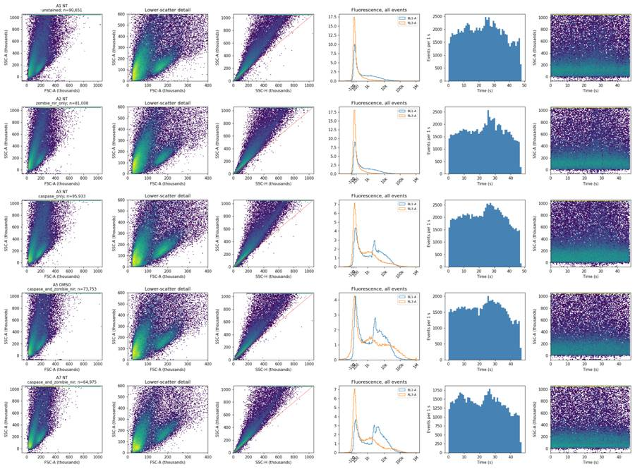
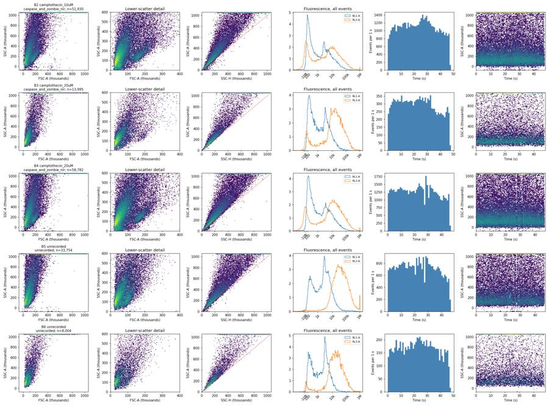
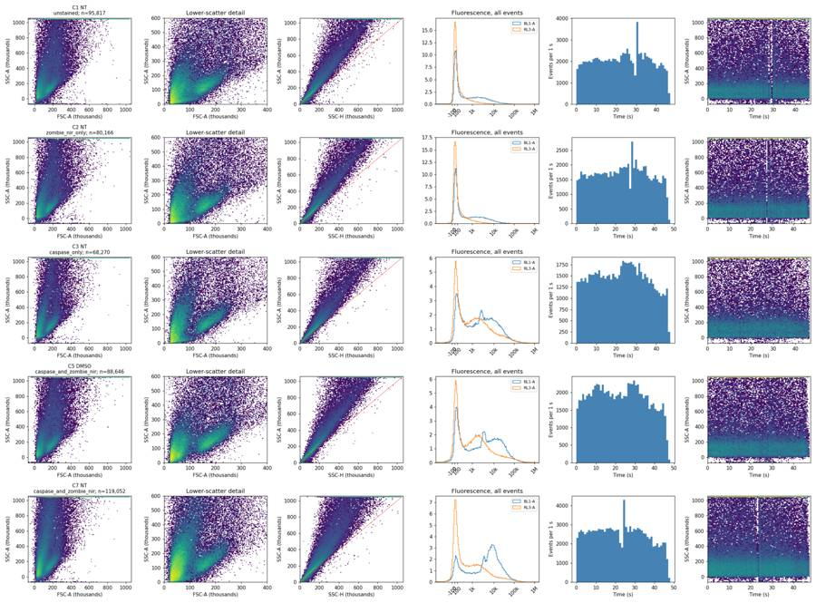
tool call · exec
for (const n of [2,5,6]) {const r=await tools.view_image({path:`/task/outputs/diagnostics/raw_page_${n}.png`});image(r.image_url);}
tool output
Script completed Wall time 0.1 seconds Output:
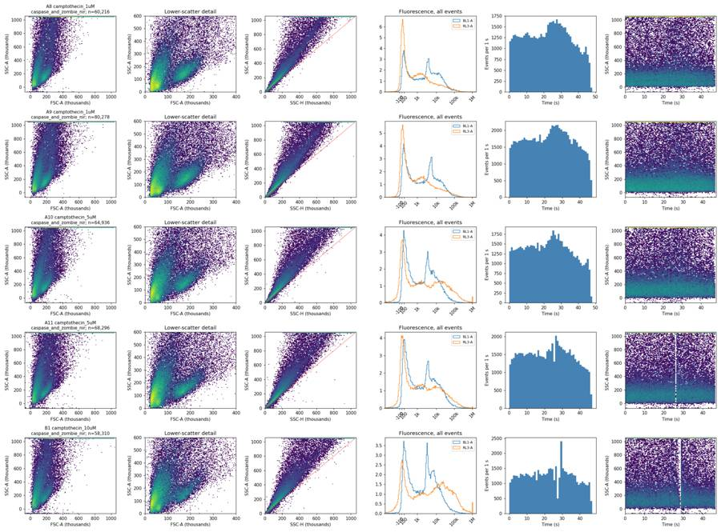
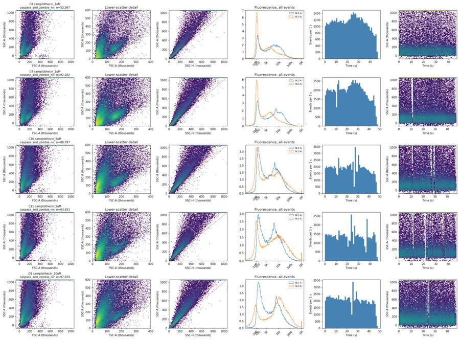
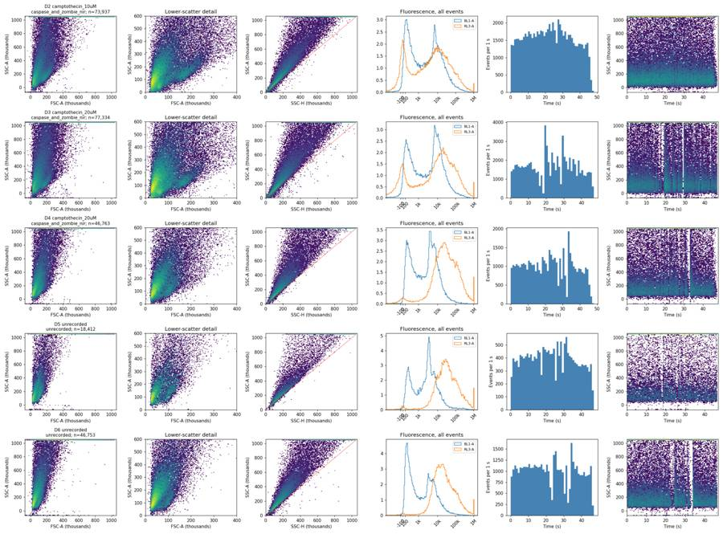
tool call · exec
text(await tools.apply_patch("*** Begin Patch\n*** Add File: /task/outputs/gate_plate.py\n+\"\"\"Reproducible full-event, uncompensated gating of the 30-well plate.\n+\n+Run: python /task/outputs/gate_plate.py\n+Gate definitions are shared by all wells. Counts are computed after XML reload.\n+\"\"\"\n+from pathlib import Path\n+import json\n+import numpy as np\n+import pandas as pd\n+import matplotlib\n+matplotlib.use('Agg')\n+import matplotlib.pyplot as plt\n+from matplotlib.colors import LogNorm\n+import flowkit as fk\n+\n+BASE=Path('/task'); OUT=BASE/'outputs'; PLOTS=OUT/'diagnostics'\n+POPULATIONS=['Cells','Single_Cells','Live','Caspase_pos']\n+PARENTS=['all_events','Cells','Single_Cells','Live']\n+CELL_CENTER=np.array([185000.,200000.])\n+CELL_COV=np.array([[125000.**2,.7*125000.*170000.],\n+ [.7*125000.*170000.,170000.**2]])\n+SINGLET_VERTICES=np.array([[10000.,5000.],[400000.,376000.],\n+ [400000.,665000.],[10000.,21500.]])\n+ZOMBIE_MAX=3000.\n+CASPASE_MIN=1500.\n+\n+def make_strategy():\n+ strategy=fk.GatingStrategy()\n+ dim=lambda c,**kw: fk.Dimension(c,compensation_ref='uncompensated',**kw)\n+ strategy.add_gate(fk.gates.EllipsoidGate('Cells',[dim('FSC-A'),dim('SSC-A')],\n+ CELL_CENTER.tolist(),CELL_COV.tolist(),1.),('root',))\n+ strategy.add_gate(fk.gates.PolygonGate('Single_Cells',[dim('SSC-H'),dim('SSC-A')],\n+ SINGLET_VERTICES.tolist()),('root','Cells'))\n+ strategy.add_gate(fk.gates.RectangleGate('Live',[dim('RL3-A',range_max=ZOMBIE_MAX)]),\n+ ('root','Cells','Single_Cells'))\n+ strategy.add_gate(fk.gates.RectangleGate('Caspase_pos',[dim('BL1-A',range_min=CASPASE_MIN)]),\n+ ('root','Cells','Single_Cells','Live'))\n+ return strategy\n+\n+def load_all():\n+ layout=pd.read_csv(BASE/'inputs/plate_layout.csv')\n+ samples={r.well:fk.Sample(BASE/'inputs/raw'/r.file) for r in layout.itertuples()}\n+ return layout,samples\n+\n+def gate_all():\n+ layout,samples=load_all()\n+ strategy=make_strategy()\n+ with (OUT/'gates.xml').open('wb') as handle:\n+ fk.export_gatingml(strategy,handle)\n+ saved=fk.parse_gating_xml(OUT/'gates.xml')\n+ masks={}; rows=[]; stats=[]\n+ for row in layout.itertuples():\n+ sample=samples[row.well]\n+ results=saved.gate_sample(sample)\n+ original=strategy.gate_sample(sample)\n+ masks[row.well]={p:results.get_gate_membership(p) for p in POPULATIONS}\n+ pcount=sample.event_count\n+ st={'well':row.well,'all_events':sample.event_count}\n+ events=sample.get_events(source='raw',subsample=False)\n+ for pop,parent in zip(POPULATIONS,PARENTS):\n+ mask=masks[row.well][pop]\n+ assert np.array_equal(mask,original.get_gate_membership(pop))\n+ n=int(results.get_gate_count(pop))\n+ assert n==int(mask.sum())\n+ pct=100*n/pcount if pcount else 0.\n+ rows.append(dict(file=row.file,well=row.well,population=pop,count=n,parent_population=parent,pct_of_parent=pct))\n+ st[pop]=n;st[pop+'_pct']=pct\n+ pcount=n\n+ for pop in ['Single_Cells','Live']:\n+ e=events[masks[row.well][pop]]\n+ for j,c in [(3,'BL1'),(4,'RL3')]:\n+ for q in [.5,.9,.95,.99,.995,.999]:\n+ st[f'{pop}_{c}_q{q}']=np.quantile(e[:,j],q) if len(e) else np.nan\n+ stats.append(st)\n+ counts=pd.DataFrame(rows)\n+ assert len(counts)==120\n+ counts.to_csv(OUT/'counts.csv',index=False,float_format='%.8f')\n+ pd.DataFrame(stats).to_csv(OUT/'gated_summary.csv',index=False)\n+ (OUT/'gate_parameters.json').write_text(json.dumps(dict(cell_center=CELL_CENTER.tolist(),cell_covariance=CELL_COV.tolist(),distance_square=1,singlet_vertices=SINGLET_VERTICES.tolist(),zombie_max=ZOMBIE_MAX,caspase_min=CASPASE_MIN),indent=2))\n+ return layout,samples,masks,pd.DataFrame(stats)\n+\n+def plots(layout,samples,masks):\n+ tx=fk.transforms.LogicleTransform(1048576,.5,4.5,0)\n+ fticks=np.array([0,100,1000,10000,100000,1048575],dtype=float)\n+ fpos=tx.apply(fticks);flabs=['0','100','1k','10k','100k','1M']\n+ theta=np.linspace(0,2*np.pi,361)\n+ ellipse=CELL_CENTER[:,None]+np.linalg.cholesky(CELL_COV)@np.vstack([np.cos(theta),np.sin(theta)])\n+ def density(ax,x,y,lims,bins=120):\n+ ax.hist2d(x,y,bins=bins,range=lims,norm=LogNorm(vmin=1),cmap='viridis')\n+ ax.set_xlim(lims[0]);ax.set_ylim(lims[1])\n+ for page in range(6):\n+ fig,axs=plt.subplots(5,5,figsize=(20,17))\n+ for ri,row in enumerate(list(layout.itertuples())[page*5:page*5+5]):\n+ w=row.well;e=samples[w].get_events(source='raw',subsample=False);m=masks[w]\n+ ax=axs[ri,0]\n+ density(ax,e[:,1]/1000,e[:,2]/1000,[[0,500],[0,600]])\n+ ax.plot(ellipse[0]/1000,ellipse[1]/1000,c='red',lw=1)\n+ ax.set_xlabel('FSC-A (thousands)');ax.set_ylabel('SSC-A (thousands)')\n+ ax.set_title(f'{w} {row.treatment}\\nCells: {m[\"Cells\"].sum():,} / {len(e):,}',fontsize=10)\n+ ax=axs[ri,1];z=e[m['Cells']]\n+ density(ax,z[:,6]/1000,z[:,2]/1000,[[0,400],[0,400]])\n+ v=np.vstack([SINGLET_VERTICES,SINGLET_VERTICES[0]])/1000\n+ ax.plot(v[:,0],v[:,1],c='r',lw=1)\n+ ax.set_xlabel('SSC-H (thousands)');ax.set_ylabel('SSC-A (thousands)')\n+ ax.set_title(f'Single_Cells: {m[\"Single_Cells\"].sum():,}')\n+ ax=axs[ri,2];z=e[m['Single_Cells']]\n+ density(ax,tx.apply(z[:,4]),z[:,2]/1000,[[-.05,1.02],[0,400]])\n+ ax.axvline(tx.apply(np.array([ZOMBIE_MAX]))[0],c='r',lw=1)\n+ ax.set_xticks(fpos);ax.set_xticklabels(flabs,rotation=45)\n+ ax.set_xlabel('RL3-A / Zombie NIR');ax.set_ylabel('SSC-A (thousands)')\n+ ax.set_title(f'Live: {m[\"Live\"].sum():,}')\n+ ax=axs[ri,3];z=e[m['Live']]\n+ density(ax,tx.apply(z[:,3]),z[:,2]/
… [2,941 more characters not shown]tool output
Script completed
Wall time 1.2 seconds
Output:
{}
{"chunk_id":"ff7c9e","wall_time_seconds":1.001206101,"session_id":79357,"original_token_count":0,"output":""}tool call · exec
text(await tools.write_stdin({session_id:79357,chars:"","yield_time_ms":1000,"max_output_tokens":3500}));
text(await tools.exec_command({cmd:"python - <<'PY'\nimport pandas as pd\ns=pd.read_csv('/task/outputs/gated_summary.csv')\nprint(s.to_string(index=False))\nPY","max_output_tokens":7000}));
tool output
Script completed
Wall time 0.3 seconds
Output:
{"chunk_id":"c7046d","wall_time_seconds":0.042788493,"exit_code":0,"original_token_count":876,"output":"well all_events Cells Cells_pct Single_Cells Single_Cells_pct Live Live_pct Caspase_pos Caspase_pos_pct\n A1 90651 16255 17.931 15190 93.448 15189 99.993 105 0.691\n A2 81008 12842 15.853 12053 93.856 12053 100.000 98 0.813\n A3 95933 19273 20.090 18367 95.299 17862 97.251 4391 24.583\n A5 73753 12882 17.466 12214 94.814 10390 85.066 2412 23.215\n A7 64975 12355 19.015 11862 96.010 11513 97.058 3908 33.944\n A8 60216 12060 20.028 11635 96.476 11126 95.625 3336 29.984\n A9 80278 18602 23.172 17918 96.323 17008 94.921 5528 32.502\n A10 64936 12676 19.521 12054 95.093 9967 82.686 2324 23.317\n A11 68296 12939 18.945 12275 94.868 10929 89.035 2850 26.077\n B1 58310 9979 17.114 9393 94.128 7031 74.854 1929 27.436\n B2 51930 7633 14.699 7223 94.629 5672 78.527 1086 19.147\n B3 13995 2129 15.213 2006 94.223 759 37.836 246 32.411\n B4 58782 7836 13.331 7419 94.678 5441 73.339 1117 20.529\n B5 33754 4185 12.399 3764 89.940 112 2.976 88 78.571\n B6 8004 1292 16.142 1224 94.737 114 9.314 83 72.807\n C1 95817 19230 20.070 17589 91.466 17588 99.994 7 0.040\n C2 80166 15972 19.924 14872 93.113 14872 100.000 8 0.054\n C3 68270 11969 17.532 11350 94.828 10996 96.881 2134 19.407\n C5 88646 17787 20.065 16688 93.821 15999 95.871 3520 22.001\n C7 119052 18763 15.760 17175 91.537 16732 97.421 6257 37.395\n C8 52267 9215 17.631 8748 94.932 8311 95.005 2542 30.586\n C9 92282 18280 19.809 16880 92.341 16226 96.126 4834 29.792\n C10 88797 14036 15.807 12996 92.590 11354 87.365 2559 22.538\n C11 63651 10565 16.598 9926 93.952 7853 79.115 2148 27.353\n D1 97824 13977 14.288 12674 90.678 8733 68.905 2157 24.699\n D2 73937 13163 17.803 12359 93.892 8745 70.758 2189 25.031\n D3 77334 12911 16.695 11735 90.891 7058 60.145 1972 27.940\n D4 46763 6340 13.558 5727 90.331 812 14.178 272 33.498\n D5 18412 2830 15.370 2651 93.675 44 1.660 35 79.545\n D6 46753 3868 8.273 3599 93.046 317 8.808 257 81.073\n"}
{"chunk_id":"bee129","wall_time_seconds":0.057444314,"exit_code":0,"original_token_count":4604,"output":"well all_events Cells Cells_pct Single_Cells Single_Cells_pct Live Live_pct Caspase_pos Caspase_pos_pct Single_Cells_BL1_q0.5 Single_Cells_BL1_q0.9 Single_Cells_BL1_q0.95 Single_Cells_BL1_q0.99 Single_Cells_BL1_q0.995 Single_Cells_BL1_q0.999 Single_Cells_RL3_q0.5 Single_Cells_RL3_q0.9 Single_Cells_RL3_q0.95 Single_Cells_RL3_q0.99 Single_Cells_RL3_q0.995 Single_Cells_RL3_q0.999 Live_BL1_q0.5 Live_BL1_q0.9 Live_BL1_q0.95 Live_BL1_q0.99 Live_BL1_q0.995 Live_BL1_q0.999 Live_RL3_q0.5 Live_RL3_q0.9 Live_RL3_q0.95 Live_RL3_q0.99 Live_RL3_q0.995 Live_RL3_q0.999\n A1 90651 16255 17.931407 15190 93.448170 15189 99.993417 105 0.691290 57.0 205.0 349.55 1269.11 1856.055 3126.873 9.0 78.0 101.00 175.11 249.385 416.622 57.0 205.0 349.60 1269.12 1856.060 3126.916 9.0 78.0 101.00 175.00 249.000 414.060\n A2 81008 12842 15.852755 12053 93.856097 12053 100.000000 98 0.813076 66.0 262.0 437.40 1370.48 1828.400 3380.552 9.0 80.0 105.00 176.00 249.740 442.532 66.0 262.0 437.40 1370.48 1828.400 3380.552 9.0 80.0 105.00 176.00 249.740 442.532\n A3 95933 19273 20.090063 18367 95.299123 17862 97.250504 4391 24.582913 174.0 3283.2 4883.40 8779.48 11404.630 21401.394 70.0 678.0 1491.70 9411.08 24454.820 43025.696 166.0
… [16,241 more characters not shown]tool call · exec
for (const f of ["control_histograms.png","gated_page_1.png","gated_page_4.png","gated_page_6.png"]) {const r=await tools.view_image({path:`/task/outputs/diagnostics/${f}`});image(r.image_url);}
tool output
Script completed Wall time 0.1 seconds Output:
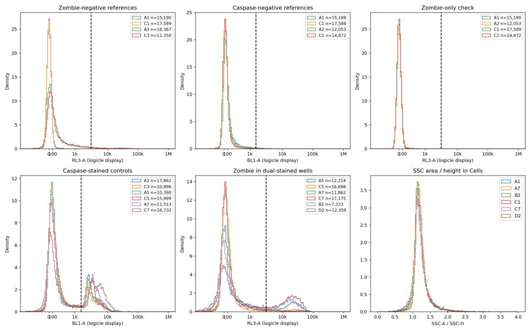
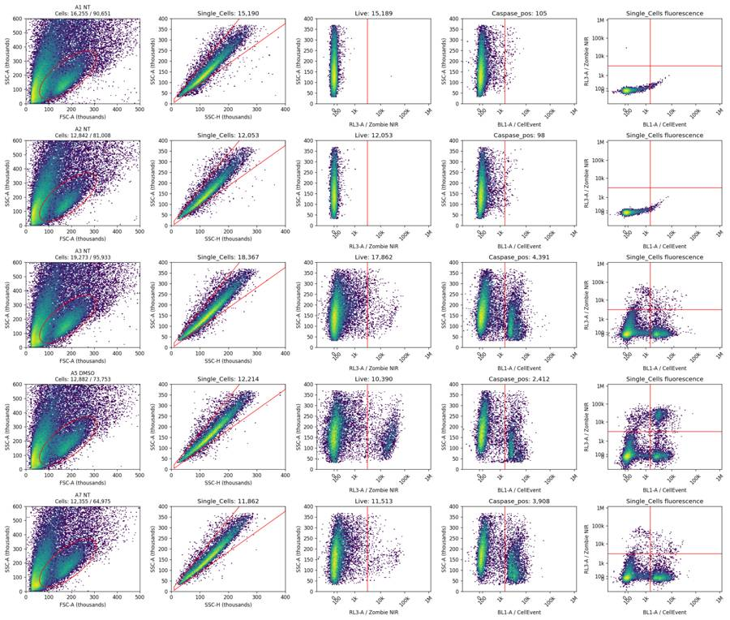
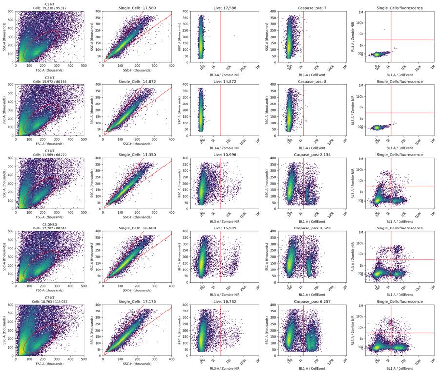
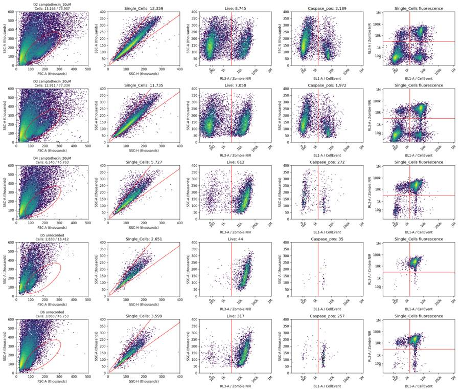
14
agent
The provisional shared gates are saved, and the XML reload reproduces all 120 counts. The scatter gates capture the cell cloud and exclude the clipped scatter events. Several wells show brief flow dropouts, and a few have very small Live populations; I’m checking how strongly those problems affect the reported endpoint.
tool call · exec
text(await tools.apply_patch("*** Begin Patch\n*** Add File: /task/outputs/inspect_qc.py\n+\"\"\"Full-data temporal QC using the exported GatingML gates.\"\"\"\n+from pathlib import Path\n+import numpy as np\n+import pandas as pd\n+import matplotlib\n+matplotlib.use('Agg')\n+import matplotlib.pyplot as plt\n+from matplotlib.colors import LogNorm\n+from scipy.ndimage import median_filter\n+import flowkit as fk\n+from gate_plate import load_all, POPULATIONS, OUT, PLOTS\n+\n+layout,samples=load_all()\n+strategy=fk.parse_gating_xml(OUT/'gates.xml')\n+summary=[]; gaps=[]; bins=[]; comparisons=[]\n+all_m={}\n+for row in layout.itertuples():\n+ w=row.well;s=samples[w];e=s.get_events(source='raw',subsample=False);t=e[:,0]\n+ result=strategy.gate_sample(s)\n+ masks={p:result.get_gate_membership(p) for p in POPULATIONS}; all_m[w]=masks\n+ edges=np.arange(0,np.ceil(t.max()*10)/10+.05,.1)\n+ mid=(edges[:-1]+edges[1:])/2\n+ rate,_=np.histogram(t,edges)\n+ base=median_filter(rate,size=51,mode='nearest')\n+ valid=(mid>=1)&(mid<=t.max()-1)\n+ deficit=valid&(rate<.25*base)\n+ excess=valid&(rate>2*base)\n+ z=dict(well=w,events=len(e),live=int(masks['Live'].sum()),low_0p1s_bins=int(deficit.sum()),high_0p1s_bins=int(excess.sum()),low_duration_s=.1*deficit.sum(),high_duration_s=.1*excess.sum(),low_events=int(rate[deficit].sum()),high_events=int(rate[excess].sum()),max_rate_0p1s=int(rate.max())*10,min_relative_rate=float(np.min(rate[valid]/base[valid])))\n+ dt=np.diff(t)\n+ inds=np.flatnonzero((dt>.04)&(t[:-1]>1)&(t[1:]<t.max()-1))\n+ for i in inds:\n+ gaps.append(dict(well=w,start_s=t[i],end_s=t[i+1],gap_s=dt[i]))\n+ z['gaps_gt_0p04_s']=len(inds)\n+ z['gaps_gt_0p1_s']=int(np.sum(dt[inds]>.1))\n+ z['gap_sum_s']=float(dt[inds].sum())\n+ z['max_gap_start']=float(t[np.argmax(dt)]); z['max_gap_end']=float(t[np.argmax(dt)+1])\n+ anomaly_mask=np.zeros(len(e),dtype=bool)\n+ for ii in np.where(deficit|excess)[0]:\n+ anomaly_mask|=(t>=edges[ii]-.5)&(t<edges[ii+1]+.5)\n+ for name,ma in [('anomaly_window',anomaly_mask),('remaining',~anomaly_mask)]:\n+ cr=dict(well=w,window=name,events=int(ma.sum()))\n+ for p in POPULATIONS:cr[p]=int(np.sum(ma&masks[p]))\n+ cr['Cells_pct']=100*cr['Cells']/max(1,cr['events'])\n+ cr['Live_pct']=100*cr['Live']/max(1,cr['Single_Cells'])\n+ cr['Caspase_pct']=100*cr['Caspase_pos']/max(1,cr['Live'])\n+ for j,c in [(1,'FSC_A'),(2,'SSC_A'),(3,'BL1_A'),(4,'RL3_A')]:\n+ zsub=e[ma&masks['Single_Cells'],j]\n+ cr[c+'_median']=float(np.median(zsub)) if len(zsub) else np.nan\n+ comparisons.append(cr)\n+ for p in POPULATIONS:\n+ z[p]=int(masks[p].sum())\n+ for pop in ['Cells','Single_Cells','Live']:\n+ ev=e[masks[pop]]\n+ for j,c in [(1,'FSC_A'),(2,'SSC_A'),(3,'BL1_A'),(4,'RL3_A'),(6,'SSC_H')]:\n+ z[f'{pop}_{c}_clipped_n']=int(np.sum(ev[:,j]>=1048575))\n+ summary.append(z)\n+ edges2=np.arange(0,np.ceil(t.max()/2)*2+.1,2)\n+ for a,b in zip(edges2[:-1],edges2[1:]):\n+ ma=(t>=a)&(t<b);cr=dict(well=w,t_start=a,t_end=b,events=int(ma.sum()))\n+ for p in POPULATIONS:cr[p]=int(np.sum(ma&masks[p]))\n+ for p,par in zip(POPULATIONS,['events']+POPULATIONS[:-1]):cr[p+'_pct']=100*cr[p]/cr[par] if cr[par] else np.nan\n+ for j,c in [(1,'FSC_A'),(2,'SSC_A'),(3,'BL1_A'),(4,'RL3_A')]:\n+ v=e[ma&masks['Single_Cells'],j]\n+ cr[c+'_median']=np.median(v) if len(v) else np.nan\n+ bins.append(cr)\n+pd.DataFrame(summary).to_csv(OUT/'qc_gated_summary.csv',index=False)\n+pd.DataFrame(gaps).to_csv(OUT/'qc_gaps.csv',index=False)\n+pd.DataFrame(comparisons).to_csv(OUT/'qc_anomaly_comparison.csv',index=False)\n+tb=pd.DataFrame(bins);tb.to_csv(OUT/'qc_gated_time_bins.csv',index=False)\n+\n+for page in range(6):\n+ fig,axs=plt.subplots(5,5,figsize=(23,16))\n+ for ri,row in enumerate(list(layout.itertuples())[page*5:page*5+5]):\n+ w=row.well;e=samples[w].get_events(source='raw',subsample=False);t=e[:,0];m=all_m[w]\n+ ax=axs[ri,0]\n+ edges=np.arange(0,np.ceil(t.max()*10)/10+.05,.1)\n+ h,_=np.histogram(t,edges)\n+ ax.step(edges[:-1],h*10,where='post',lw=.8)\n+ for p in ['Cells','Live']:\n+ hg,_=np.histogram(t[m[p]],edges)\n+ ax.step(edges[:-1],hg*10,where='post',lw=.7,label=p)\n+ ax.set_title(f'{w} {row.treatment}\\n0.1 s event rates');ax.set_xlabel('Time (s)');ax.set_ylabel('Events/s');ax.legend(fontsize=7)\n+ ax=axs[ri,1];z=tb[tb.well==w]\n+ for p in ['Cells','Live','Caspase_pos']:\n+ ax.plot((z.t_start+z.t_end)/2,z[p+'_pct'],'.-',label=p,lw=.8)\n+ ax.set_ylim(0,101);ax.set_xlabel('Time (s)');ax.set_ylabel('% of parent (2 s bins)');ax.legend(fontsize=7)\n+ ax=axs[ri,2]\n+ for c in ['FSC_A','SSC_A']:\n+ ax.plot((z.t_start+z.t_end)/2,z[c+'_median']/1000,'.-',label=c)\n+ ax.set_ylim(0,300);ax.set_xlabel('Time (s)');ax.set_ylabel('Singlet median (thousands)');ax.legend(fontsize=7)\n+ tx=fk.transforms.LogicleTransform(1048576,.5,4.5,0)\n+ for ci,j,c in [(3,3,'BL1-A'),(4,4,'RL3-A')]:\n+ ax=axs[ri,ci];ev=e[m['Single_Cells']]\n+ ax.hist2d(ev[:,0],tx.apply(ev[:,j]),bins=[180,140],range=[[0,t.max()],[-.15,1.05]],norm=LogNorm(vmin=1),cmap='viridis')\n+ ticks=np.array([-100,0,1000,10000,100000],dtype=float)\n+ ax.set_yticks(tx.apply(ticks));ax.set_yticklabels(['-100','0','1k','10k','100k'])\n+ ax.set_xlabel('Time (s)');ax.set_ylabel(c+' in Single_Cells')\n+ fig.tight_layout();fig.savefig(PLOTS/f'temporal_page_{page+1}.png',dpi=120);plt.close(fig)\n+print(pd.DataFrame(summary).iloc[:,:17].round(3).to_string(index=False))\n*** End Patch"));
text(await tools.exec_command({cmd:"python /task/outputs/inspect_qc.py","yield_time_ms":1000,"max_output_tokens":3500}));
text(await tools.clock__curr_time({}
… [4 more characters not shown]tool output
Script completed
Wall time 1.2 seconds
Output:
{}
{"chunk_id":"fc53d9","wall_time_seconds":1.00066504,"session_id":86468,"original_token_count":0,"output":""}
{"current_time":"2026-11-10 17:12:20 UTC"}tool call · exec
text(await tools.exec_command({cmd:"python - <<'PY'\nimport pandas as pd\nfor f in ['qc_gated_summary','qc_anomaly_comparison','qc_gaps']:\n d=pd.read_csv('/task/outputs/'+f+'.csv')\n if f=='qc_gated_summary': d=d.iloc[:,:22]\n if f=='qc_gaps': d=d[d.gap_s>.1]\n print(f)\n print(d.round(3).to_string(index=False))\nPY","max_output_tokens":9000}));
text(await tools.write_stdin({session_id:86468,chars:"","yield_time_ms":1000,"max_output_tokens":3500}));
tool output
Script completed
Wall time 0.2 seconds
Output:
{"chunk_id":"dd4126","wall_time_seconds":0.060078326,"exit_code":0,"original_token_count":5067,"output":"qc_gated_summary\nwell events live low_0p1s_bins high_0p1s_bins low_duration_s high_duration_s low_events high_events max_rate_0p1s min_relative_rate gaps_gt_0p04_s gaps_gt_0p1_s gap_sum_s max_gap_start max_gap_end Cells Single_Cells Live Caspase_pos Cells_FSC_A_clipped_n Cells_SSC_A_clipped_n\n A1 90651 15189 3 0 0.3 0.0 83 0 4180 0.004 4 0 0.231 29.579 29.667 16255 15190 15189 105 0 0\n A2 81008 12053 8 2 0.8 0.2 183 806 4570 0.014 7 0 0.410 15.382 15.463 12842 12053 12053 98 0 0\n A3 95933 17862 1 0 0.1 0.0 46 0 4730 0.189 0 0 0.000 44.922 44.945 19273 18367 17862 4391 0 0\n A5 73753 10390 3 0 0.3 0.0 34 0 3140 0.005 6 0 0.326 26.996 27.069 12882 12214 10390 2412 0 0\n A7 64975 11513 0 0 0.0 0.0 0 0 2120 0.667 0 0 0.000 13.365 13.381 12355 11862 11513 3908 0 0\n A8 60216 11126 1 0 0.1 0.0 32 0 2740 0.204 0 0 0.000 36.945 36.976 12060 11635 11126 3336 0 0\n A9 80278 17008 1 0 0.1 0.0 40 0 3020 0.233 2 0 0.086 16.950 16.995 18602 17918 17008 5528 0 0\n A10 64936 9967 4 1 0.4 0.1 95 421 4210 0.006 3 1 0.206 23.682 23.790 12676 12054 9967 2324 0 0\n A11 68296 10929 6 2 0.6 0.2 82 757 4110 0.000 2 1 0.227 25.961 26.143 12939 12275 10929 2850 0 0\n B1 58310 7031 21 13 2.1 1.3 248 4267 5590 0.000 7 2 0.922 28.314 28.799 9979 9393 7031 1929 0 0\n B2 51930 5672 9 4 0.9 0.4 149 1046 3070 0.000 6 1 0.438 22.482 22.610 7633 7223 5672 1086 0 0\n B3 13995 759 0 1 0.0 0.1 0 48 480 0.355 1 0 0.072 19.537 19.609 2129 2006 759 246 0 0\n B4 58782 5441 11 8 1.1 0.8 82 2456 4180 0.000 9 1 0.698 27.665 27.914 7836 7419 5441 1117 0 0\n B5 33754 112 9 7 0.9 0.7 51 1187 1990 0.000 5 2 0.606 27.534 27.851 4185 3764 112 88 0 0\n B6 8004 114 0 3 0.0 0.3 0 80 330 0.357 19 0 0.942 47.023 47.124 1292 1224 114 83 0 0\n C1 95817 17588 21 12 2.1 1.2 502 5962 7170 0.000 14 3 1.172 29.275 29.518 19230 17589 17588 7 0 0\n C2 80166 14872 17 4 1.7 0.4 431 1796 5170 0.000 10 2 0.869 27.583 27.840 15972 14872 14872 8 0 0\n C3 68270 10996 5 0 0.5 0.0 93 0 3520 0.016 11 1 0.639 25.040 25.152 11969 11350 10996 2134 0 0\n C5 88646 15999 7 1 0.7 0.1 285 464 4640 0.059
… [21,492 more characters not shown]tool call · exec
for (const n of [1,4,5,6]) {const r=await tools.view_image({path:`/task/outputs/diagnostics/temporal_page_${n}.png`});image(r.image_url);}
tool output
Script completed Wall time 0.2 seconds Output:
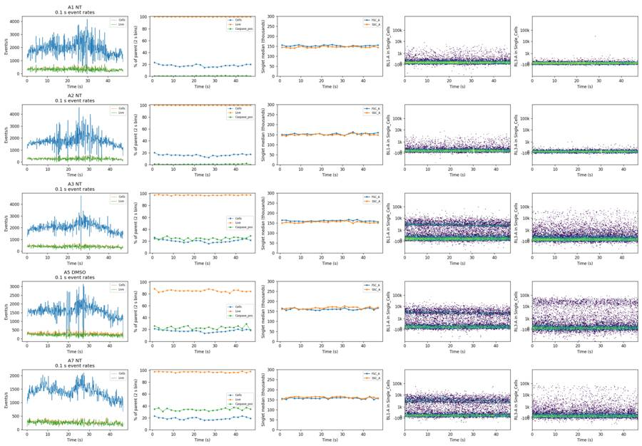
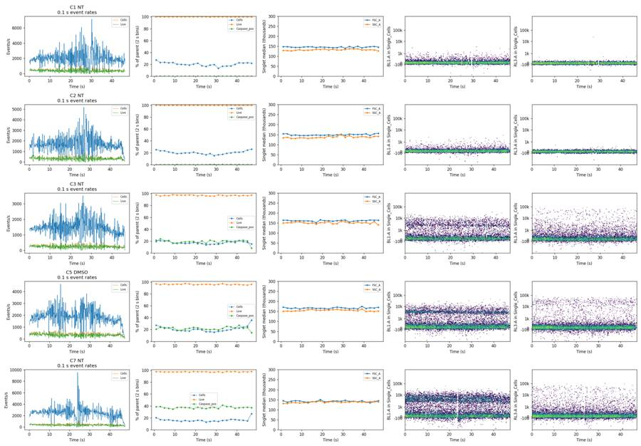
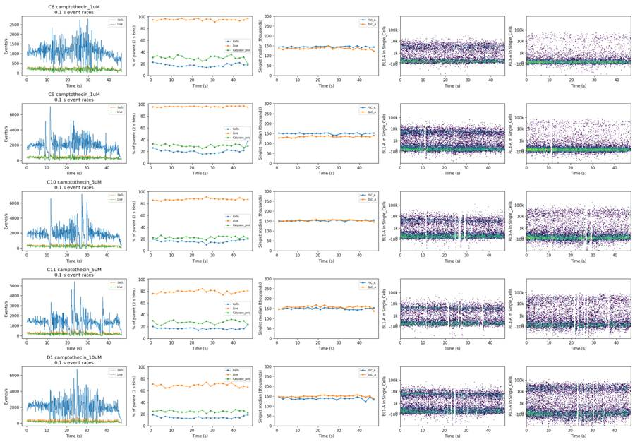
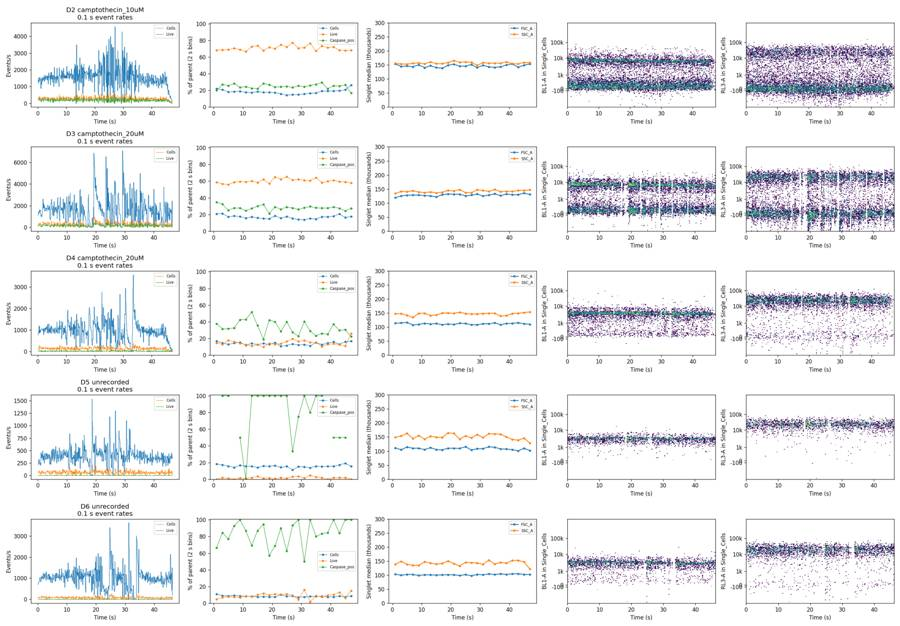
tool call · exec
text(await tools.exec_command({cmd:"python - <<'PY'\nimport sys,numpy as np,pandas as pd,flowkit as fk\nsys.path.insert(0,'/task/outputs')\nfrom gate_plate import load_all\nl,s=load_all();g=fk.parse_gating_xml('/task/outputs/gates.xml')\nfor w in ['A1','A2','A3','A5','A7','C1','C2','C3','C5','C7']:\n e=s[w].get_events(source='raw');m=g.gate_sample(s[w]).get_gate_membership('Single_Cells');z=e[m]\n print(w,'raw',len(e),'singlets',len(z),'RL3 median',np.median(z[:,4]),'RL3>500/1k/3k/10k',[(t,int((z[:,4]>=t).sum()),round(100*np.mean(z[:,4]>=t),3)) for t in [500,1000,3000,10000]],'RL3bright BL1neg',int(((z[:,4]>10000)&(z[:,3]<1500)).sum()),'raw RL3 q99/99.9',np.quantile(e[:,4],[.99,.999]))\nPY","max_output_tokens":3500}));
text(await tools.clock__curr_time({}));
tool output
Script completed
Wall time 1.3 seconds
Output:
{"chunk_id":"ebc9ed","wall_time_seconds":1.102509398,"exit_code":0,"original_token_count":506,"output":"A1 raw 90651 singlets 15190 RL3 median 9.0 RL3>500/1k/3k/10k [(500, 7, 0.046), (1000, 1, 0.007), (3000, 1, 0.007), (10000, 1, 0.007)] RL3bright BL1neg 1 raw RL3 q99/99.9 [ 3302.5 11599.3]\nA2 raw 81008 singlets 12053 RL3 median 9.0 RL3>500/1k/3k/10k [(500, 11, 0.091), (1000, 1, 0.008), (3000, 0, 0.0), (10000, 0, 0.0)] RL3bright BL1neg 0 raw RL3 q99/99.9 [ 2997. 10281.916]\nA3 raw 95933 singlets 18367 RL3 median 70.0 RL3>500/1k/3k/10k [(500, 2320, 12.631), (1000, 1307, 7.116), (3000, 505, 2.749), (10000, 180, 0.98)] RL3bright BL1neg 121 raw RL3 q99/99.9 [ 70556.48 206851.188]\nA5 raw 73753 singlets 12214 RL3 median 83.0 RL3>500/1k/3k/10k [(500, 3018, 24.709), (1000, 2392, 19.584), (3000, 1824, 14.934), (10000, 1458, 11.937)] RL3bright BL1neg 315 raw RL3 q99/99.9 [218902.44 983819.99200013]\nA7 raw 64975 singlets 11862 RL3 median 73.0 RL3>500/1k/3k/10k [(500, 1492, 12.578), (1000, 816, 6.879), (3000, 349, 2.942), (10000, 139, 1.172)] RL3bright BL1neg 87 raw RL3 q99/99.9 [100880.3 257814.16]\nC1 raw 95817 singlets 17589 RL3 median 4.0 RL3>500/1k/3k/10k [(500, 3, 0.017), (1000, 1, 0.006), (3000, 1, 0.006), (10000, 1, 0.006)] RL3bright BL1neg 1 raw RL3 q99/99.9 [ 4099. 14883.184]\nC2 raw 80166 singlets 14872 RL3 median 3.0 RL3>500/1k/3k/10k [(500, 1, 0.007), (1000, 0, 0.0), (3000, 0, 0.0), (10000, 0, 0.0)] RL3bright BL1neg 0 raw RL3 q99/99.9 [ 4127.7 15098.97]\nC3 raw 68270 singlets 11350 RL3 median 94.0 RL3>500/1k/3k/10k [(500, 1655, 14.581), (1000, 948, 8.352), (3000, 354, 3.119), (10000, 151, 1.33)] RL3bright BL1neg 112 raw RL3 q99/99.9 [108542.41 341137.17]\nC5 raw 88646 singlets 16688 RL3 median 67.0 RL3>500/1k/3k/10k [(500, 1304, 7.814), (1000, 929, 5.567), (3000, 689, 4.129), (10000, 500, 2.996)] RL3bright BL1neg 121 raw RL3 q99/99.9 [158616.3 658840.26499996]\nC7 raw 119052 singlets 17175 RL3 median 64.0 RL3>500/1k/3k/10k [(500, 1566, 9.118), (1000, 910, 5.298), (3000, 443, 2.579), (10000, 214, 1.246)] RL3bright BL1neg 120 raw RL3 q99/99.9 [ 85920.76 258883.61699999]\n"}
{"current_time":"2026-11-10 17:14:23 UTC"}18
agent
The fluorescence boundaries are now set at RL3-A < 3,000 for Live and BL1-A ≥ 1,500 for Caspase_pos. I also found unexpected RL3-bright events in A3/C3, which are labeled caspase-only; I’ll flag that control concern with medium confidence. Low cell recovery alone won’t be treated as evidence that a well ran dry.
tool call · exec
text(await tools.exec_command({cmd:"python - <<'PY'\nimport pandas as pd\nq=pd.read_csv('/task/outputs/qc_gated_summary.csv')\ncols=[c for c in q if 'clipped' in c]\nprint(q[cols].sum().to_string())\nprint(q[['well','Cells_BL1_A_clipped_n','Cells_RL3_A_clipped_n']].to_string(index=False))\nPY","max_output_tokens":2000}));
text(await tools.apply_patch("*** Begin Patch\n*** Add File: /task/outputs/finalize.py\n+\"\"\"Write QC decisions and validate all requested deliverables.\n+\n+QC thresholds are explicit analyst-selected screens, not instrument specifications.\n+They do not remove events or change the common gates.\n+\"\"\"\n+from pathlib import Path\n+import json\n+import numpy as np\n+import pandas as pd\n+from scipy.stats import norm\n+from scipy.ndimage import median_filter\n+import flowkit as fk\n+from gate_plate import load_all, POPULATIONS, PARENTS, OUT\n+\n+layout,samples=load_all()\n+raw=pd.read_csv(OUT/'qc_raw_summary.csv').set_index('well')\n+qc=pd.read_csv(OUT/'qc_gated_summary.csv').set_index('well')\n+gs=pd.read_csv(OUT/'gated_summary.csv').set_index('well')\n+strategy=fk.parse_gating_xml(OUT/'gates.xml')\n+flags=[]; control_stats=[]\n+\n+def wilson(k,n):\n+ z=norm.ppf(.975); p=k/n; den=1+z*z/n\n+ cen=(p+z*z/(2*n))/den\n+ rad=z*np.sqrt(p*(1-p)/n+z*z/(4*n*n))/den\n+ return 100*(cen-rad),100*(cen+rad)\n+\n+for row in layout.itertuples():\n+ w=row.well;s=samples[w];e=s.get_events(source='raw',subsample=False)\n+ q=qc.loc[w];r=raw.loc[w];g=gs.loc[w]\n+ result=strategy.gate_sample(s)\n+ masks={p:result.get_gate_membership(p) for p in POPULATIONS}\n+ sc=e[masks['Single_Cells']]\n+ edge=np.arange(0,np.ceil(e[:,0].max()*10)/10+.05,.1)\n+ mid=(edge[:-1]+edge[1:])/2\n+ interior=(mid>=1)&(mid<=e[:,0].max()-1)\n+ low_fraction=100*q.low_0p1s_bins/interior.sum()\n+ severe_flow=(r.max_gap>.4 or low_fraction>5 or (r.rate_cv>.25 and r.max_gap>.1))\n+ ci=wilson(int(g.Caspase_pos),int(g.Live))\n+ detail=(f'{int(r.all_events)} total events; {int(g.Single_Cells)} Single_Cells; '\n+ f'{int(g.Live)} Live ({g.Live_pct:.2f}% of Single_Cells); '\n+ f'{int(g.Caspase_pos)} Caspase_pos ({g.Caspase_pos_pct:.2f}% of Live). ')\n+ flow=(f'Time {r.t_min:.3f}-{r.t_max:.3f} s; longest no-event interval '\n+ f'{q.max_gap_start:.3f}-{q.max_gap_end:.3f} s ({r.max_gap:.3f} s); '\n+ f'{q.low_duration_s:.1f} s ({low_fraction:.2f}% of interior time) in 0.1-s bins '\n+ f'below 25% of the local 5.1-s median rate; '\n+ f'1-s event-rate CV={r.rate_cv:.3f}; '\n+ f'0.1-s peak rate={int(q.max_rate_0p1s)} events/s. ')\n+ ctrl=dict(well=w,Single_Cells=len(sc),RL3_median=float(np.median(sc[:,4])),\n+ RL3_q99=float(np.quantile(sc[:,4],.99)),\n+ RL3_ge_3000=int(np.sum(sc[:,4]>=3000)),\n+ RL3_ge_10000=int(np.sum(sc[:,4]>=10000)),\n+ RL3_ge_10000_BL1_lt_1500=int(np.sum((sc[:,4]>=10000)&(sc[:,3]<1500))))\n+ if row.is_control=='yes':control_stats.append(ctrl)\n+ if w in ['A3','C3']:\n+ partner='A1' if w=='A3' else 'C1'\n+ pn=int(gs.loc[partner].Single_Cells)\n+ nbright=ctrl['RL3_ge_10000']\n+ evidence=(detail+f'Stated caspase-only/Zombie-negative control has '\n+ f'{ctrl[\"RL3_ge_3000\"]}/{len(sc)} ({100*ctrl[\"RL3_ge_3000\"]/len(sc):.2f}%) singlets at RL3-A>=3000, '\n+ f'including {nbright} ({100*nbright/len(sc):.2f}%) at RL3-A>=10000 '\n+ f'versus 1/{pn} ({100/pn:.4f}%) in unstained {partner}; '\n+ f'{ctrl[\"RL3_ge_10000_BL1_lt_1500\"]} of the RL3-bright events have BL1-A<1500. '\n+ 'Not a clean Zombie-negative reference; stain identity or contamination is uncertain, not proven. confidence=medium')\n+ category='bad_control';usable='no'\n+ elif g.Live<400:\n+ evidence=(detail+f'Live denominator below the operational 400-event minimum; '\n+ f'95% Wilson interval for Caspase_pos/Live={ci[0]:.2f}-{ci[1]:.2f}%. '\n+ +flow+\n+ ('Also meets the severe-flow screen. ' if severe_flow else '')+\n+ 'The low Live yield alone does not establish that the well ran dry. confidence=high')\n+ category='too_few_events';usable='no'\n+ elif severe_flow:\n+ evidence=(detail+flow+'Repeated dropouts/bursts or a prolonged interruption exceed the stated flow-QC limits; '\n+ 'a physical clog cannot be distinguished from other interrupted flow. '\n+ 'No time intervals were removed. confidence=high')\n+ category='clog_or_interrupted_flow';usable='no'\n+ else:\n+ category='ok';usable='yes'\n+ evidence=detail+flow+'No clipping in the retained scatter gates; adequate Live denominator. '\n+ if w in ['A2','C2']:\n+ partner='A1' if w=='A2' else 'C1'\n+ evidence+=(f'No RL3-A>=3000 singlets; RL3 median={np.median(sc[:,4]):.0f}, near unstained {partner}. '\n+ 'Usable as the intended BL1-negative reference; Zombie staining/positive separation is not validated by this well. ')\n+ if row.treatment=='unrecorded':\n+ evidence+='Treatment/stain identity unrecorded; no assignment inferred. '\n+ evidence+='confidence=medium'\n+ flags.append(dict(file=row.file,well=w,usable=usable,reason_category=category,evidence=evidence.strip()))\n+\n+flags=pd.DataFrame(flags)\n+flags.to_csv(OUT/'flags.csv',index=False)\n+pd.DataFrame(control_stats).to_csv(OUT/'control_qc.csv',index=False)\n+\n+counts=pd.read_csv(OUT/'counts.csv')\n+expected_columns=['file','well','population','count','parent_population','pct_of_parent']\n+assert list(counts.columns)==expected_columns\n+assert list(flags.columns)==['file','well','usable','reason_category','evidence']\n+assert len(counts)==120 and len(flags)==30\n+assert not counts.duplicated(['file','population']).any()\n+assert not fl
… [2,159 more characters not shown]tool output
Script completed
Wall time 1.4 seconds
Output:
{"chunk_id":"73d957","wall_time_seconds":0.058076355,"exit_code":0,"original_token_count":523,"output":"Cells_FSC_A_clipped_n 0\nCells_SSC_A_clipped_n 0\nCells_BL1_A_clipped_n 0\nCells_RL3_A_clipped_n 0\nCells_SSC_H_clipped_n 0\nSingle_Cells_FSC_A_clipped_n 0\nSingle_Cells_SSC_A_clipped_n 0\nSingle_Cells_BL1_A_clipped_n 0\nSingle_Cells_RL3_A_clipped_n 0\nSingle_Cells_SSC_H_clipped_n 0\nLive_FSC_A_clipped_n 0\nLive_SSC_A_clipped_n 0\nLive_BL1_A_clipped_n 0\nLive_RL3_A_clipped_n 0\nLive_SSC_H_clipped_n 0\nwell Cells_BL1_A_clipped_n Cells_RL3_A_clipped_n\n A1 0 0\n A2 0 0\n A3 0 0\n A5 0 0\n A7 0 0\n A8 0 0\n A9 0 0\n A10 0 0\n A11 0 0\n B1 0 0\n B2 0 0\n B3 0 0\n B4 0 0\n B5 0 0\n B6 0 0\n C1 0 0\n C2 0 0\n C3 0 0\n C5 0 0\n C7 0 0\n C8 0 0\n C9 0 0\n C10 0 0\n C11 0 0\n D1 0 0\n D2 0 0\n D3 0 0\n D4 0 0\n D5 0 0\n D6 0 0\n"}
{}
{"chunk_id":"a4fdcb","wall_time_seconds":1.00054407,"session_id":30328,"original_token_count":70,"output":"/task/outputs/finalize.py:104: UserWarning: This pattern is interpreted as a regular expression, and has match groups. To actually get the groups, use str.extract.\n assert flags.loc[flags.usable=='no','evidence'].str.contains(r'confidence=(high|medium|low)',regex=True).all()\n"}tool call · exec
text(await tools.apply_patch("*** Begin Patch\n*** Add File: /task/outputs/notes.md\n+## Gates\n+\n+FlowKit 1.2.3; all events, raw/uncompensated detector IDs, one common nested strategy. XML was exported with `flowkit.export_gatingml`, reloaded with `flowkit.parse_gating_xml`, and all 120 counts reproduced. Logicle scaling is for plots only; saved gates use linear raw units.\n+\n+- **Cells → all_events:** FSC-A × SSC-A ellipse centered at (185,000, 200,000), coordinate half-spans (125,000, 170,000), correlation 0.70, squared Mahalanobis radius 1. It surrounds the shared diagonal cell cloud, excluding low-FSC debris and the high-scatter/clipped cloud. Placement was checked across controls, genotypes and treatments.\n+- **Single_Cells → Cells:** four-vertex SSC-H × SSC-A polygon: (10,000, 5,000), (400,000, 376,000), (400,000, 665,000), (10,000, 21,500). It follows the area/height mode near 1.2 and excludes the excess-area tail; 89.9–96.5% of Cells remain.\n+- **Live → Single_Cells:** RL3-A < 3,000. A1/C1 define autofluorescence; the dominant negative distributions in A3/C3 inform the broader boundary (97.25%/96.88% retained). B2/D2 and other treated wells confirm exclusion of the distinct bright population around 10,000–40,000. A3/C3 have a control caveat below; the boundary does not encompass their anomalous bright tail.\n+- **Caspase_pos → Live:** BL1-A ≥ 1,500, above the observed negative 99th percentiles in A1/C1/A2/C2 (1,269/514/1,370/459). Negative-control positivity is 0.04–0.81%. BL1-A is CellEvent, irrespective of the stale GFP label. One-dimensional fluorescence rectangles inherit SSC-A support from Cells (30,000–370,000); no additional scatter cut is needed.\n+\n+## Quality control\n+\n+Reviewed full-event density plots, 0.1-s/1-s rates, 2-s population fractions, scatter/fluorescence over Time, detector clipping, and controls. Time is in seconds via FCS `$TIMESTEP`. Counts include every acquired event presented to the four gates, including flagged wells.\n+\n+Operational exclusions: **Live <400** (worst-case binomial 95% precision about ±5 percentage points); or severe interrupted flow: **>5%** of interior 0.1-s bins below **25%** of their local 5.1-s median, an internal no-event gap **>0.4 s**, or complete 1-s rate **CV >0.25** with a gap >0.1 s. First/last seconds are excluded from the low-rate screen. These are analyst-selected thresholds, not instrument specifications.\n+\n+Twelve wells fail: B1/C10/C11/D1/D3/D4 (flow); B5/B6/D5/D6 (112/114/44/317 Live events); A3/C3 (suspect controls, medium confidence). A3/C3 contain 180/151 singlets with RL3-A ≥10,000, mostly BL1-negative, versus one each in A1/C1: they are unsuitable as clean Zombie-negative references. A2/C2 show no Zombie-bright singlets; retain them for their specified BL1-negative role, but they do not validate Zombie staining. Low viability, treatment differences, and unrecorded identity alone are not exclusions. No sustained terminal collapse establishes “ran dry.” Raw SSC-A clipping is 13.2–39.8%, but no retained Cells event clips any required scatter/fluorescence detector. Detailed evidence and confidence are in `flags.csv`; plots and numeric QC are retained alongside it.\n+\n+## Deviations from the strategy\n+\n+Single-stain purity was not assumed for A3/C3: only their dominant negative mode informed Live, with A1/C1 and treated-well separation providing corroboration. Their unexpected bright events were not used to raise the cutoff. Otherwise none; one-dimensional rectangles are explicitly allowed. No compensation, time gate, event trimming, or per-well gate changes were applied.\n*** End Patch"));
text(await tools.write_stdin({session_id:30328,chars:"","yield_time_ms":1000,"max_output_tokens":3500}));
text(await tools.exec_command({cmd:"wc -w /task/outputs/notes.md\ncat /task/outputs/gates.xml\nls -lh /task/outputs","max_output_tokens":5000}));
tool output
Script completed
Wall time 0.0 seconds
Output:
{}
{"chunk_id":"3fc6eb","wall_time_seconds":0.00000313,"exit_code":0,"original_token_count":311,"output":"well usable reason_category\n A1 yes ok\n A2 yes ok\n A3 no bad_control\n A5 yes ok\n A7 yes ok\n A8 yes ok\n A9 yes ok\n A10 yes ok\n A11 yes ok\n B1 no clog_or_interrupted_flow\n B2 yes ok\n B3 yes ok\n B4 yes ok\n B5 no too_few_events\n B6 no too_few_events\n C1 yes ok\n C2 yes ok\n C3 no bad_control\n C5 yes ok\n C7 yes ok\n C8 yes ok\n C9 yes ok\n C10 no clog_or_interrupted_flow\n C11 no clog_or_interrupted_flow\n D1 no clog_or_interrupted_flow\n D2 yes ok\n D3 no clog_or_interrupted_flow\n D4 no clog_or_interrupted_flow\n D5 no too_few_events\n D6 no too_few_events\nAll 120 counts independently reproduced from saved XML; all format and nesting checks passed.\n"}
{"chunk_id":"a94052","wall_time_seconds":0.00000269,"exit_code":0,"original_token_count":996,"output":"467 /task/outputs/notes.md\n<?xml version='1.0' encoding='UTF-8'?>\n<gating:Gating-ML xmlns:gating=\"http://www.isac-net.org/std/Gating-ML/v2.0/gating\" xmlns:data-type=\"http://www.isac-net.org/std/Gating-ML/v2.0/datatypes\" xmlns:transforms=\"http://www.isac-net.org/std/Gating-ML/v2.0/transformations\">\n <gating:EllipsoidGate gating:id=\"Cells\">\n <gating:dimension gating:compensation-ref=\"uncompensated\">\n <data-type:fcs-dimension data-type:name=\"FSC-A\"/>\n </gating:dimension>\n <gating:dimension gating:compensation-ref=\"uncompensated\">\n <data-type:fcs-dimension data-type:name=\"SSC-A\"/>\n </gating:dimension>\n <gating:mean>\n <gating:coordinate data-type:value=\"185000.0\"/>\n <gating:coordinate data-type:value=\"200000.0\"/>\n </gating:mean>\n <gating:covarianceMatrix>\n <gating:row>\n <gating:entry data-type:value=\"15625000000.0\"/>\n <gating:entry data-type:value=\"14875000000.0\"/>\n </gating:row>\n <gating:row>\n <gating:entry data-type:value=\"14875000000.0\"/>\n <gating:entry data-type:value=\"28900000000.0\"/>\n </gating:row>\n </gating:covarianceMatrix>\n <gating:distanceSquare data-type:value=\"1.0\"/>\n </gating:EllipsoidGate>\n <gating:PolygonGate gating:id=\"Single_Cells\" gating:parent_id=\"Cells\">\n <gating:dimension gating:compensation-ref=\"uncompensated\">\n <data-type:fcs-dimension data-type:name=\"SSC-H\"/>\n </gating:dimension>\n <gating:dimension gating:compensation-ref=\"uncompensated\">\n <data-type:fcs-dimension data-type:name=\"SSC-A\"/>\n </gating:dimension>\n <gating:vertex>\n <gating:coordinate data-type:value=\"10000.0\"/>\n <gating:coordinate data-type:value=\"5000.0\"/>\n </gating:vertex>\n <gating:vertex>\n <gating:coordinate data-type:value=\"400000.0\"/>\n <gating:coordinate data-type:value=\"376000.0\"/>\n </gating:vertex>\n <gating:vertex>\n <gating:coordinate data-type:value=\"400000.0\"/>\n <gating:coordinate data-type:value=\"665000.0\"/>\n </gating:vertex>\n <gating:vertex>\n <gating:coordinate data-type:value=\"10000.0\"/>\n <gating:coordinate data-type:value=\"21500.0\"/>\n </gating:vertex>\n </gating:PolygonGate>\n <gating:RectangleGate gating:id=\"Live\" gating:parent_id=\"Single_Cells\">\n <gating:dimension gating:compensation-ref=\"uncompensated\" gating:max=\"3000.0\">\n <data-type:fcs-dimension data-type:name=\"RL3-A\"/>\n </gating:dimension>\n </gating:RectangleGate>\n <gating:RectangleGate gating:id=\"Caspase_pos\" gating:parent_id=\"Live\">\n <gating:dimension gating:compensation-ref=\"uncompensated\" gating:min=\"1500.0\">\n <data-type:fcs-dimension data-type:name=\"BL1-A\"/>\n </gating:dimension>\n </gating:RectangleGate>\n</gating:Gating-ML>\ntotal 536K\ndrwxr-xr-x 2 root root 4.0K Nov 10 17:12 __pycache__\n-rw-r--r-- 1 root root 468 Nov 10 17:16 control_qc.csv\n-rw-r--r-- 1 root root 9.7K Nov 10 17:10 counts.csv\ndrwxr-xr-x 2 root root 4.0K Nov 10 17:12 diagnostics\n-rw-r--r-- 1 root root 4.4K Nov 10 17:09 explore.py\n-rw-r--r-- 1 root root 92K Nov 10 17:09 fcs_metadata.json\n-rw-r--r-- 1 root root 7.2K Nov 10 17:16 finalize.py\n-rw-r--r-- 1 root root 16K Nov 10 17:16 flags.csv\n-rw-r--r-- 1 root root 460 Nov 10 17:10 gate_parameters.json\n-rw-r--r-- 1 root root 8.2K Nov 10 17:10 gate_plate.py\n-rw-r--r-- 1 root root 14K Nov 10 17:10 gated_summary.csv\n-rw-r--r-- 1 root root 2.7K Nov 10 17:10 gates.xml\n-rw-r--r-- 1 root root 5.4K Nov 10 17:12 inspect_qc.py\n-rw-r--r-- 1 root root 3.5K Nov 10 17:16 notes.md\n-rw-r--r-- 1 root root 7.3K Nov 10 17:12 qc_anomaly_comparison.csv\n-rw-r--r-- 1 root root 11K Nov 10 17:12 qc_gaps.csv\n-rw-r--r-- 1 root root 5.0K Nov 10 17:12 qc_gated_summary.csv\n-rw-r--r-- 1 root root 92K Nov 10 17:12 qc_gated_time_bins.csv\n-rw-r--r-- 1 root root 9.4K Nov 10 17:09 qc_raw_summary.csv\n-rw-r--r-- 1 root root 179K Nov 10 17:09 qc_time_bins.csv\n-rw-r--r-- 1 root root 24K Nov 10 17:09 raw_quantiles.csv\n-rw-r--r-- 1 root root 3.3K Nov 10 17:16 validation.json\n"}tool call · exec
for (const f of ["gated_page_2.png","gated_page_3.png","gated_page_5.png","temporal_page_2.png","temporal_page_3.png"]) {const r=await tools.view_image({path:`/task/outputs/diagnostics/${f}`});image(r.image_url);}
tool output
Script completed Wall time 0.2 seconds Output:
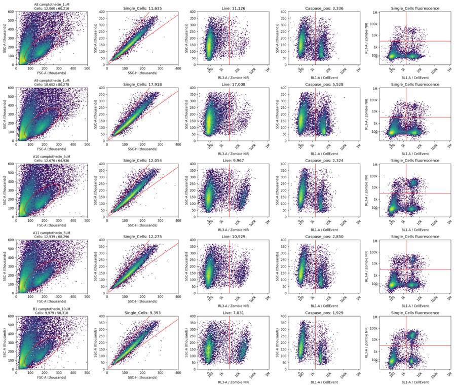
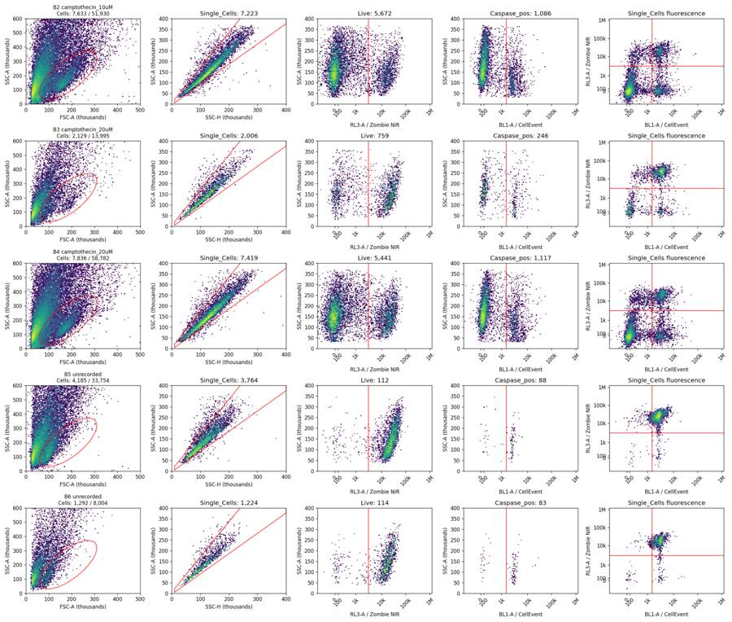
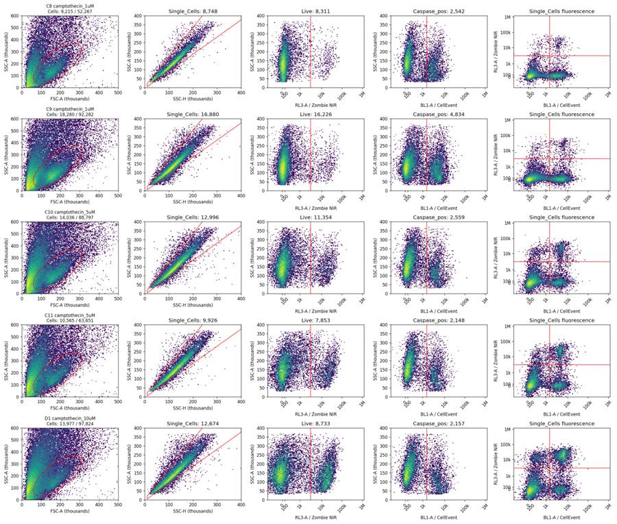
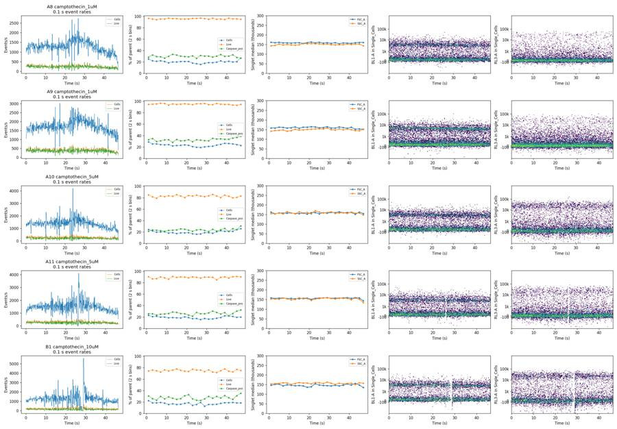
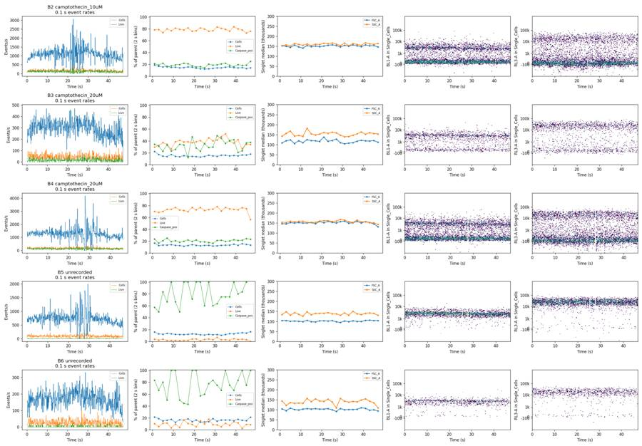
tool call · exec
text(await tools.apply_patch("*** Begin Patch\n*** Update File: /task/outputs/notes.md\n@@\n-- **Cells → all_events:** FSC-A × SSC-A ellipse centered at (185,000, 200,000), coordinate half-spans (125,000, 170,000), correlation 0.70, squared Mahalanobis radius 1. It surrounds the shared diagonal cell cloud, excluding low-FSC debris and the high-scatter/clipped cloud. Placement was checked across controls, genotypes and treatments.\n-- **Single_Cells → Cells:** four-vertex SSC-H × SSC-A polygon: (10,000, 5,000), (400,000, 376,000), (400,000, 665,000), (10,000, 21,500). It follows the area/height mode near 1.2 and excludes the excess-area tail; 89.9–96.5% of Cells remain.\n-- **Live → Single_Cells:** RL3-A < 3,000. A1/C1 define autofluorescence; the dominant negative distributions in A3/C3 inform the broader boundary (97.25%/96.88% retained). B2/D2 and other treated wells confirm exclusion of the distinct bright population around 10,000–40,000. A3/C3 have a control caveat below; the boundary does not encompass their anomalous bright tail.\n-- **Caspase_pos → Live:** BL1-A ≥ 1,500, above the observed negative 99th percentiles in A1/C1/A2/C2 (1,269/514/1,370/459). Negative-control positivity is 0.04–0.81%. BL1-A is CellEvent, irrespective of the stale GFP label. One-dimensional fluorescence rectangles inherit SSC-A support from Cells (30,000–370,000); no additional scatter cut is needed.\n+- **Cells (parent all_events):** FSC-A × SSC-A ellipse centered at (185,000, 200,000), coordinate half-spans (125,000, 170,000), correlation 0.70, squared Mahalanobis radius 1. It surrounds the shared diagonal cell cloud, excluding low-FSC debris and the high-scatter/clipped cloud. Placement was checked across controls, genotypes and treatments.\n+- **Single_Cells (parent Cells):** four-vertex SSC-H × SSC-A polygon: (10,000, 5,000), (400,000, 376,000), (400,000, 665,000), (10,000, 21,500). It follows the area/height mode near 1.2 and excludes the excess-area tail; 89.9–96.5% of Cells remain.\n+- **Live (parent Single_Cells):** RL3-A < 3,000. A1/C1 define autofluorescence; the dominant negative distributions in A3/C3 inform the broader boundary (97.25%/96.88% retained). B2/D2 and other treated wells confirm exclusion of the distinct bright population around 10,000–40,000. A3/C3 have a control caveat below; the boundary does not encompass their anomalous bright tail.\n+- **Caspase_pos (parent Live):** BL1-A ≥ 1,500, above the observed negative 99th percentiles in A1/C1/A2/C2 (1,269/514/1,370/459). Negative-control positivity is 0.04–0.81%. BL1-A is CellEvent, irrespective of the stale GFP label. One-dimensional fluorescence rectangles inherit SSC-A support from Cells (30,000–370,000); no additional scatter cut is needed.\n*** Update File: /task/outputs/finalize.py\n@@\n- severe_flow=(r.max_gap>.4 or low_fraction>5 or (r.rate_cv>.25 and r.max_gap>.1))\n+ dt=np.diff(e[:,0])\n+ internal_gap=(e[:-1,0]>=1)&(e[1:,0]<=e[:,0].max()-1)\n+ max_internal_gap=float(dt[internal_gap].max())\n+ severe_flow=(max_internal_gap>.4 or low_fraction>5 or (r.rate_cv>.25 and max_internal_gap>.1))\n@@\n-assert flags.loc[flags.usable=='no','evidence'].str.contains(r'confidence=(high|medium|low)',regex=True).all()\n+assert flags.loc[flags.usable=='no','evidence'].str.contains(r'confidence=(?:high|medium|low)',regex=True).all()\n@@\n for row in layout.itertuples():\n s=samples[row.well]; result=strategy.gate_sample(s)\n+ assert s.metadata['wellid']==row.well\n+ assert s.metadata['date']=='20-Mar-2023'\n+ assert s.event_count==int(s.metadata['tot'])\n+ assert {'FSC-A','SSC-A','SSC-H','BL1-A','RL3-A','Time'}<=set(s.pnn_labels)\n+ assert s.compensation is None\n+ e=s.get_events(source='raw',subsample=False)\n+ assert len(e)==s.event_count and np.isfinite(e).all()\n+ assert np.all(np.diff(e[:,s.time_index])>=0)\n*** End Patch"));
text(await tools.exec_command({cmd:"python /task/outputs/finalize.py","yield_time_ms":1000,"max_output_tokens":2000}));
text(await tools.clock__curr_time({}));
tool output
Script completed
Wall time 1.2 seconds
Output:
{}
{"chunk_id":"38592a","wall_time_seconds":1.00117972,"session_id":15580,"original_token_count":0,"output":""}
{"current_time":"2026-11-10 17:18:02 UTC"}22
agent
All 30 wells are processed. Under the documented QC thresholds, 12 are flagged: six for interrupted flow, four for fewer than 400 Live events, and A3/C3 for suspect control staining. All 120 counts match the reloaded XML gates; I’m completing the file-format and metadata checks.
tool call · exec
text(await tools.write_stdin({session_id:15580,chars:"","yield_time_ms":1000,"max_output_tokens":2000}));
text(await tools.exec_command({cmd:"python - <<'PY'\nfrom pathlib import Path\nimport pandas as pd\nfrom lxml import etree\np=Path('/task/outputs')\nroot=etree.parse(str(p/'gates.xml'))\nns={'g':'http://www.isac-net.org/std/Gating-ML/v2.0/gating'}\ndims=root.xpath('//g:dimension',namespaces=ns)\nassert len(dims)==6\nassert all(x.get('{'+ns['g']+'}compensation-ref')=='uncompensated' for x in dims)\nnotes=(p/'notes.md').read_text()\nassert [s for s in notes.splitlines() if s.startswith('## ')]==['## Gates','## Quality control','## Deviations from the strategy']\nassert len(notes.split())<500\nfor name in ['gates.xml','counts.csv','flags.csv','notes.md']:\n assert (p/name).stat().st_size>0\nprint('Required files present; 4 gates, 6 uncompensated dimensions, 120 count rows, 30 flag rows, 467-word notes.')\nf=pd.read_csv(p/'flags.csv')\nprint(f[f.usable=='no'].groupby('reason_category').well.apply(', '.join).to_string())\nprint('PNG diagnostic sheets:',len(list((p/'diagnostics').glob('*.png'))))\nPY","max_output_tokens":1000}));
tool output
Script completed
Wall time 0.2 seconds
Output:
{"chunk_id":"6cac8d","wall_time_seconds":0.00000343,"exit_code":0,"original_token_count":311,"output":"well usable reason_category\n A1 yes ok\n A2 yes ok\n A3 no bad_control\n A5 yes ok\n A7 yes ok\n A8 yes ok\n A9 yes ok\n A10 yes ok\n A11 yes ok\n B1 no clog_or_interrupted_flow\n B2 yes ok\n B3 yes ok\n B4 yes ok\n B5 no too_few_events\n B6 no too_few_events\n C1 yes ok\n C2 yes ok\n C3 no bad_control\n C5 yes ok\n C7 yes ok\n C8 yes ok\n C9 yes ok\n C10 no clog_or_interrupted_flow\n C11 no clog_or_interrupted_flow\n D1 no clog_or_interrupted_flow\n D2 yes ok\n D3 no clog_or_interrupted_flow\n D4 no clog_or_interrupted_flow\n D5 no too_few_events\n D6 no too_few_events\nAll 120 counts independently reproduced from saved XML; all format and nesting checks passed.\n"}
{"chunk_id":"807cc0","wall_time_seconds":0.058094394,"exit_code":0,"original_token_count":77,"output":"Required files present; 4 gates, 6 uncompensated dimensions, 120 count rows, 30 flag rows, 467-word notes.\nreason_category\nbad_control A3, C3\nclog_or_interrupted_flow B1, C10, C11, D1, D3, D4\ntoo_few_events B5, B6, D5, D6\nPNG diagnostic sheets: 19\n"}23
agent
Completed all 30 wells. The reloaded GatingML reproduces all 120 count rows.
- [gates.xml](/task/outputs/gates.xml)
- [counts.csv](/task/outputs/counts.csv)
- [flags.csv](/task/outputs/flags.csv)
- [notes.md](/task/outputs/notes.md)
Flagged 12 wells: six for interrupted flow, four for insufficient Live events, and A3/C3 for suspect controls with medium confidence. Well-specific evidence and QC thresholds are documented.